<style>
    /* 基础样式：沉浸式阅读体验 */
    body { 
        font-family: -apple-system, BlinkMacSystemFont, "Segoe UI", Roboto, "Helvetica Neue", Arial, sans-serif; 
        line-height: 1.8; 
        color: #333;
        max-width: 800px; 
        margin: 0 auto; 
        padding: 40px 20px; 
        background-color: #fff;
    }

    /* 章节单元 */
    .chapter-unit { margin-bottom: 80px; }

    /* 标题体系 */
    h1 { font-size: 2.5em; color: #2c3e50; border-bottom: 3px solid #8e44ad; padding-bottom: 15px; margin-top: 0; margin-bottom: 30px;}
    .subtitle { font-size: 1.5em; color: #f39c12; margin-top: -20px; margin-bottom: 40px; font-weight: 300; }
    h2 { font-size: 1.8em; color: #e74c3c; margin-top: 50px; padding-left: 10px; border-left: 5px solid #e74c3c; }
    h3 { font-size: 1.4em; color: #2980b9; margin-top: 40px; }
    h4 { font-size: 1.1em; color: #34495e; font-weight: bold; margin-top: 25px; }

    /* 正文 */
    p { margin-bottom: 1.5em; text-align: justify; }
    strong { color: #2c3e50; }

    /* 特殊区域 */
    .sidebar { 
        background: #f7f9fb; 
        padding: 25px; 
        border-left: 5px solid #3498db; 
        margin: 30px 0; 
        border-radius: 4px; 
    }
    .sidebar h3, .sidebar h4 { margin-top: 0; color: #2980b9; }

    .exercises { 
        background: #fffcf0; 
        padding: 25px; 
        margin: 40px 0; 
        border: 1px solid #f0e6d2; 
        border-radius: 8px; 
    }
    .exercises h3 { margin-top: 0; color: #d35400; }
    
    .check-understanding {
        border-top: 1px dashed #ccc;
        border-bottom: 1px dashed #ccc;
        padding: 15px 0;
        margin: 20px 0;
        color: #555;
        font-style: italic;
    }
    .check-understanding::before { content: "✅ 科学过程理解检查："; font-weight: bold; color: #27ae60; font-style: normal; margin-right: 5px;}

    /* 列表 */
    ul, ol { margin-bottom: 1.5em; padding-left: 20px; }
    li { margin-bottom: 0.5em; }

    /* 表格 */
    table { width: 100%; border-collapse: collapse; margin: 30px 0; font-size: 0.9em; }
    th, td { border: 1px solid #ddd; padding: 12px; text-align: left; }
    th { background-color: #f2f2f2; font-weight: bold; }

    /* 图片占位符 */
    .image-placeholder { 
        background: #f8f9fa; border: 1px solid #dee2e6; 
        display: flex; align-items: center; justify-content: center;
        margin: 25px auto 10px auto; 
        color: #6c757d; font-family: monospace; font-size: 0.8em;
        position: relative;
    }
    .image-placeholder::before { content: "🖼️ Image Area " attr(data-bbox); }
    .caption { font-size: 0.9em; color: #666; text-align: center; margin-bottom: 35px; border-bottom: 1px solid #eee; padding-bottom: 10px;}
</style>
<article class="chapter-unit">
<!-- Page 1 & 2: Intro -->
<h1>第23章 银河系</h1>
<div class="subtitle">太空中的旋涡</div>
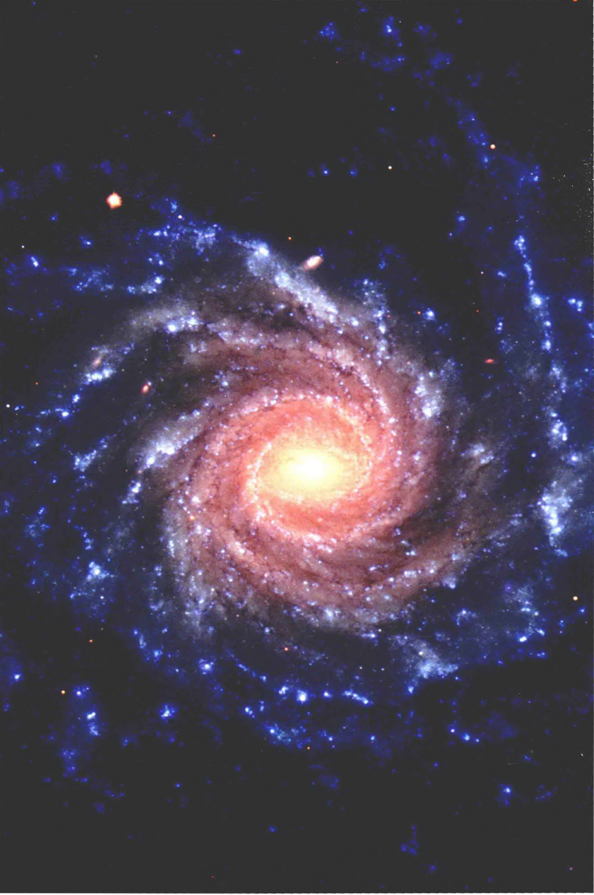
<div class="caption">
<strong>左图：</strong>名为NGC1232的真彩色图片。像这样的星系大约拥有上千亿颗因引力而束缚在一起的恒星。当我们从大尺度上看去，这个距离我们6000万光年的壮观的旋涡星系，将其旋转优雅的伸展至10万光年的空间中。它的尺度、形状和质量都与银河系非常接近。由于我们身处银河系中，所以无法完整地拍摄到它的宏伟全貌。如果看到的这张图是我们的银河系，那么太阳就将位于其中一条旋臂上，大约距离中心三分之二的位置。[欧洲南方天文台 (ESO)]
    </div>
<p>在晴朗的黑夜仰望天空，我们会被夜空的两个特征所震撼。第一，我们看到的恒星几乎均匀地分布在天空的各个方向。它们似乎距离我们很近，描绘出太阳周围数百秒差距之内的本地近邻成员。但这不过是局部印象，是有些偏狭的观念。除了那些近邻恒星，我们注意到的第二件事就是一道跨越夜空的模糊光带，这就是银河系。</p>
<p>我们观察的角度是从星系内部出发，看到的是无数遥远恒星汇集而成的光。当我们站在比近邻恒星遥远得多的尺度、考虑更大的空间范围时，银河系的大尺度结构就会展现出来，一个新的组织结构便呼之欲出。</p>
<aside class="sidebar">
<h3>知识全景</h3>
<p>我们的银河系只是可见宇宙中千亿星系中的一员——注意，是一千亿个星系！对于天文学家来说，银河系对星系的重要性就如同太阳对于恒星。我们对拥有大量形形色色恒星的这个自己所处的大系统的大小、尺度、结构和动力学的了解，直接决定了我们对于遍布宇宙的星系的认知。</p>
</aside>
<aside class="sidebar">
<h3>学习目标</h3>
<p>本章的学习将使你能够：</p>
<ol>
<li>描述银河系的整体结构，以及不同区域之间的差异。</li>
<li>解释变星对于测量银河系尺寸和形状的重要意义。</li>
<li>银河系不同区域恒星的轨道运动的比较和反差。</li>
<li>通过现有的银河系形成理论来理解盘星和晕星的差异。</li>
<li>解释银河系与其他星系中观测到的旋臂。</li>
<li>解释关于银河系自转的何种研究揭示了银河系的尺寸和质量，并探讨暗物质的本质。</li>
<li>描述银河系中心超大质量黑洞的证据以及其他的观测现象。</li>
</ol>
</aside>
<aside class="sidebar">
<h3>精通天文学</h3>
<p>访问 MasteringAstronomy 网站的学习板块，获取小测验、动画、视频、互动图，以及自学教程。</p>
</aside>
<!-- Page 3 -->
<h2>23.1 我们的星系家园</h2>
<p>星系是庞大数量的恒星与星际物质——恒星、气体、尘埃、中子星、黑洞等构成的集团，它们独立于宇宙空间中，同时被自身引力所束缚。天文学家发现除了银河系以外，实际上还存在数以十亿计的星系。这个我们恰巧居住的星系被称作 Milky Way Galaxy（<strong>银河系</strong>），或者就用 Galaxy 来指代（大写的G）。</p>
<p><strong>银河系盘</strong>是银河系中一个广阔的、圆形的、扁平的区域，它包含银河系中大部分亮星和星际物质（几乎就是目前为止这本书所提到的一切物质）。我们的太阳就位于银盘上。如图23.1所示，从里向外看去，银盘就像是一道穿越夜空的光束，也就是我们熟知的“银河”。就像图中所展示的，如果我们朝着背向银盘的方向看去（红色箭头），只能看到为数不多的一些星。但是，如果我们的视线方向正好落在银盘内（白色和蓝色箭头），我们就会看到非常多的星星，以至于它们的光融汇成一片连绵的光影。</p>
<p>自相矛盾的是，虽然我们可以细致研究太阳附近的单颗恒星和星际云，但是我们在银盘上的位置使得从地球破解银河系的大尺度结构成为一件极为困难的任务——有点像是不能离开公园的长椅，却要阐明公园道路、灌木和树丛的布局。从某些方向上，我们还无法明确地解释所看到的现象；而在另一些方向上，前景天体会完全遮挡我们的视线，而且我们也无法通过移动它们而得到更好的视角。因此，天文学家常常不得不通过与更遥远但却更容易观测的系统进行比较来研究银河系。</p>

<div class="caption">
<strong>图23.1 我们的星系家园</strong><br/>
        (a) 在这幅想象图中，从地球向银河系中心（白色箭头方向）看去，我们可以看到无数恒星在被称为银河的稀疏光带中堆叠。往相反的方向（蓝色箭头方向）看去，我们只能看到银河系的很少一部分。而向垂直于银盘的方向（红色箭头方向）看去，会看到更为稀少的恒星。(b) 在这幅夜空的真实光学图像（在地球上一个非常暗的地方拍摄）中，白色箭头指向的模糊（几乎是白色和乳状的）光带就是银河系的银盘。[A. 梅林格 (A. Mellinger)]
    </div>
<div class="check-understanding">
        为什么我们看到的银河系是划过夜空的一道光带？
    </div>
<!-- Page 4 -->

<div class="caption">
<strong>图23.2 仙女星系的结构</strong><br/>
        (a) 仙女星系的外观与我们的银河系非常相似。图中可以清晰地看到它的盘和核球，但是严密包围盘与核球的暗弱晕星却不那么容易看到。图中闪烁的白色恒星都是来自银河系的前景星，它们与仙女星系分布在相同的天区范围内，但是距离要近大约1000倍。(b) 这个星系内部的细节展示，包括 (c) 它独特而且有待揭示的双核结构。[R. 根德勒 (R.Gendler)、帕洛玛天文台 (Paloma Observatory)、加州理工学院 (Caltech)、美国国家航空航天局 (NASA)]
    </div>
<h2>23.2 丈量银河系</h2>
<p>20世纪以前，天文学家关于宇宙的概念与现代观点截然不同。当时，人们完全不知道自己所生活的空间只是无数巨大物质“岛屿”中的一个，这些岛屿被更广阔的近乎真空的空间所分隔。当然，那时的人们也根本不能区分“我们的银河系”与“宇宙”。太阳不是银河系的中心与银河系不是宇宙的中心这两个紧密相连的观点需要时间和可靠的观测证据才能得到广泛的认可。关于银河系的知识以及还存在许多与其相似的其他星系的事实，与宇宙距离尺度的发展息息相关。</p>

<div class="caption">
<strong>图23.3 盘星系</strong><br/>
        (a) 这个侧向星系叫作M101，与银河系和仙女星系的整体结构相似。(b) 星系NGC 4565 侧向对着我们，因此可以清楚地看到它的盘和中心核球。[美国国家航空航天局 (NASA)]
    </div>
<!-- Page 5 -->

<div class="caption">
<strong>图23.4 赫歇尔的星系模型</strong><br/>
        18世纪的天文学家威廉·赫歇尔通过统计天空中不同方向的恒星数目绘制了这幅银河系的“地图”。太阳（黄点）看似位于分布的中心附近。图像的长轴与银盘面基本平行。（这个尺寸并不是来自赫歇尔的测量，而是对他当时观点的估计。）
    </div>
<h3>恒星计数</h3>
<p>18世纪晚期，人们还不知道任何恒星的距离。英国天文学家威廉·赫歇尔试图通过计算天空中不同方向可见恒星数目的简单方法来估计银河系的形状。假设所有的恒星都具有相同的亮度，他推断，银河系有些扁平，基本上呈盘状分布的恒星汇集在银道面上，而太阳就在银河系的中心附近，如图23.4所示。后来改良了这种方法，也得出了相同的结论，可是赫歇尔无法利用这种方法测量银河系的尺寸。但是在20世纪初，随着对于恒星性质的不断深入了解，一些天文学家进一步估算出银河系的尺度大约是直径10kpc、厚度2kpc。</p>
<p>今天我们知道了银河系跨越数十kpc，而太阳的位置远不在其中心。为什么过去的观点会存在如此严重的错误呢？原因在于早期的观测都是通过可见光波段进行的，而天文学家没有考虑到（当时未知的）星际气体和尘埃对于可见光的吸收。直到20世纪30年代，天文学家才开始意识到星际介质的真实范围和重要性。</p>
<p>由于星际尘埃的作用，银盘中任何距离我们数千秒差距之外的天体都被隐藏了起来（可见光波段）。因此，我们看到的银盘上随距离衰减的恒星密度并不是空间中恒星数目的真实减少，而仅仅是银盘自身环境的作用。赫歇尔图上狭长的“手指”是遮挡效应比其他方向稍微严重一些的方向。然而，由于部分遮挡在盘的各个方向上都存在，所以衰减应当与观测的方向没有太大关系，因此太阳看起来基本上就是在银河系的中心位置。图23.4的水平延展大致对应着图23.1中蓝色和白色箭头的延伸。</p>
<p>来自银道面上面或者下面的辐射在视线方向上经过了较少的气体和尘埃，因此在到达地球途中遇到的削弱也相对较少。虽然仍然存在着一些成团的遮挡物，但是从银盘外部看太阳的位置恰巧没有受到星际云的严重遮挡。</p>
<h3>旋涡星云和球状星团</h3>
<p>我们已经了解到，星际介质的存在阻碍了天文学家通过光学手段研究银盘的尝试，但是，从银盘以外的其他方向，我们仍然能够看到更远的距离。20世纪初，关于银河系大尺度结构的研究主要关注两大类远离银河系的特殊天体。第一类是<strong>球状星团</strong>，也就是紧密束缚在一起的年老而偏红的恒星集合；现在大约已经发现了150个这类星团。第二类是由当时被称作<strong>旋涡星云</strong>的天体。图23.2(a)和图23.3(a)中是这两类天体的实例。今天，我们把它们称为<strong>旋涡星系</strong>，与银河系大小相当。</p>
<p>20世纪早期，天文学家没有办法确定这些天体的距离。它们的距离非常遥远以至于无法观测其视差，而现在的技术仍然无法清楚地辨识和测量主序星（自1911年发现主序之后）。基于这些原因，三角和分光视差都不适用。因此，即使是球状星团和旋涡星云最基本的性质——大小、质量和恒星以及星际物质，都是未知的。这些都建立在球状星团位于银河系内部的假设之上，而人们当时认为银河系相对较小（利用前文描述的估算尺寸）。旋涡星云的位置则更不确定。</p>
<p>了解一颗天体的距离对于认识其本质至关重要。我们不妨再次以仙女座“星云”为例（见图23.2）。19世纪晚期，望远镜和拍照技术得到改进，天文学家也因此得到比图23.2(a)更翔实的图像。新发布的照片极大地振奋了天文学家，他们认为自己看到了在一团旋转的气体盘中形成恒星的过程！将图23.2(a)与《今日天文——太阳系和地外生命探索》第12章中的图[尤其是图12.2(b)]相比，如果我们认为自己看到的是一个相对距离较近、恒星大小的天体，那么就有可能理解为什么会出现那样的错误了。那么新的观测数据似乎只能证实仙女星云仅仅是银河系的一小部分，而远不能表明它是遥远而庞大的。</p>
<!-- Page 6 -->
<p>进一步的观测很快就证明了仙女星云并不是一个恒星形成区。仙女星云的视差太小以至于无法测量，这就表明它距离地球至少有上百秒差距，并且即使是100pc——现在我们知道仙女星云的真实距离远不止这个数，是不可能分辨出一个具有太阳星云大小的天体的，而且显然也不会像图23.2(a)所描绘的那样。</p>
<p>在20世纪的第一个25年里，天文界就银河系的大小和旋涡星云的距离展开了激烈的辩论（见后文及第29页的讨论）。其中一派认为，旋涡星云是位于银河系内部的相对较小的系统；另一些天文学家则相信旋涡星云是较大的天体、位于银河系外遥远的地方，并且和银河系具有可比拟的大小。但是，由于没有确凿的距离信息，两种观点都无法定论。只有通过一种新的距离测量技术（接下来要介绍到），才最终表明第二种观点更为准确。然而在这个过程中，天文学家对于银河系的认识发生了根本的变化。</p>
<h3>一种新标准</h3>
<p>20世纪耗费大量人力编纂恒星目录的一个重要副产品就是对<strong>变星</strong>的系统研究——变星是光度随时间变化的恒星，有一些变化并不十分有规律，而另外一些的变化则非常有规律。只有很小一部分恒星属于这类天体，它们对于天文学具有非常重要的意义。</p>
<p>在本套书前面的章节中就已经出现过变星的例子。例如，在掩食双星中，由于双星系统中的一颗恒星的光会被另一颗周期性地遮挡，因此总亮度会发生变化。双星的成员在新星爆发时会产生更加剧烈的结果，因此也因其亮度的突然剧烈变化而被称为<strong>激变变星</strong>。</p>
<p>然而，在其他情况下，恒星的光变是其基本的特征，并不依赖于它是否是双星系统的一部分。我们将这样的恒星称作<strong>内因变星</strong>。有一类特别重要的内因变星叫作<strong>脉动变星</strong>，它们的光度呈现出周期性的特征变化（见图23.5）。有两种<strong>脉动变星</strong>对于揭示银河系的真实外延以及近邻天体的距离具有至关重要的作用，它们就是<strong>天琴座RR变星</strong>和<strong>造父变星</strong>。沿用天文学长久以来的惯例，天体的名称都来源于第一颗被发现的此类天体。对这两类变星而言，它们的名字来源于天琴座RR (RR Lyrae) 以及仙王座第四亮的星——仙王座δ星（造父一）。</p>

<div class="caption">
<strong>图23.5 变星</strong><br/>
        (a) 这里展示的是连续拍摄的造父变星天鹅座WW（黑框）的亮度极大和极小值，两幅分别在两天拍摄的照片被叠加起来，并稍加错位。(b) 脉动变星天琴座RR的光变曲线。所有天琴座RR变星都具有基本相同的光变曲线，它们的周期不到一天。(c) 天鹅座WW的光变曲线，其周期大约为3天。[哈佛大学天文台 (Harvard College Observatory)]
    </div>
<p>通过它们具有独特性状的光变曲线可以识别天琴座RR变星和造父变星。天琴座RR变星的脉动规律非常相似[见图23.5(b)]，只是周期上略有差异，观测到的周期范围大约在0.5~1天之间。造父变星的脉动方式也非常独特[图23.5(c)中规律性的锯齿形状]，但是不同造父变星的脉动周期差异很大，跨度从1天到100天。任何特定天琴座RR变星和造父变星的周期都精确地往复出现。脉动变星的关键意义在于，可以仅通过观测它们发出的光来识别和认证这些天体。</p>
<!-- Page 7 -->
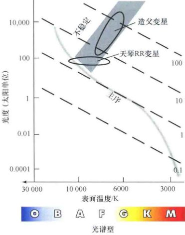
<div class="caption">
<strong>图23.6 赫罗图上的变星</strong><br/>
        赫罗图中不稳定带上的脉动变星。当一颗大质量恒星的演化经过不稳定带时，就会成为一颗造父变星。不稳定带上的低质量水平支恒星就是天琴座RR变星。
    </div>
<p>值得注意的是，脉动变星与<strong>脉冲星</strong>没有任何关系！脉冲星是快速自转的中子星，它们自转时会将能量传播到周围的空间中；在某个时刻我们将看到，脉动变星作为“普通”恒星正在经历一个演化过程中暂时的不稳定时期。</p>
<p>为什么造父变星和天琴座RR变星会脉动？它们的基本机制是英国天体物理学家亚瑟·爱丁顿爵士在1941年提出的。任何一颗恒星的结构很大程度上是由辐射从核心传播到光球层的难易程度决定的——也就是说，由内部的<strong>不透明度</strong>以及光传播过程中气体对其的阻碍程度决定。如果不透明度增加，辐射受到阻碍，内部压强增加，恒星就会“膨胀”；如果不透明度降低，辐射就能够轻易穿过，恒星就会收缩。根据理论研究，在特定的条件下，一颗恒星会失去平衡并会进入辐射流引起不透明度升高的状态——使得恒星膨胀、降温、光度减小——随后收缩，导致我们所看到的脉动。主序星中很难满足产生脉动的必要条件。</p>
<p>相反地，脉动发生在演化到主序后的恒星中，这些恒星会经过赫罗图上被称为<strong>不稳定带</strong>的区域（见图23.6）。当一颗恒星的温度与光度达到这个带时，恒星内部会变得不稳定。恒星的温度和半径都会有规律地变化，导致我们看到的脉动。基于上述原因，当恒星变亮时，它的半径收缩且表面温度升高；当其光度降低时，恒星膨胀并降温。大质量恒星的演化经过赫罗图的上部。当它们的演化轨迹到达不稳定带时，它们就被称为<strong>造父变星</strong>。天琴座RR变星则是位于不稳定带下部的小质量<strong>水平支星</strong>。因此，脉动变星是正在经历一个短暂的——通常百万年——不稳定阶段的普通恒星，这是恒星演化的必然过程。（参见《今日天文——恒星：从诞生到死亡》第9章内容）</p>
<h3>宇宙距离尺度</h3>
<p>对于星系天文学，这类恒星的重要性在于，如果我们确认了一颗天琴座RR变星或者造父变星，就可以得到它的光度，从而能够测量其距离。通过比较恒星光度（已知）和视亮度（观测得到），便可以根据平方反比的关系推算其距离：</p>
<div style="background:#eee; padding:10px; text-align:center; font-family:serif; margin: 20px 0;">
        视亮度 ∝ 光度 / 距离<sup>2</sup>
</div>
<p>通过这种方法，天文学家能将脉动变星作为确定距离的一种手段，既可以应用在银河系内，也可以应用在银河系外。</p>
<p>如何推算一颗变星的光度？对于天琴座RR变星，方法很简单。所有的水平支星基本上都具有相同的光度（一个完整脉动周期的平均值）——大约是太阳的100倍。因此，一旦确定了一颗变星是天琴座RR变星，就能立刻得到其光度。对于造父变星，需要利用一个平均光度和脉动周期的相关性，这个关系是1908年由哈佛大学的亨丽埃塔·莱维特发现的（参见探索1-1），简称为<strong>周期-光度关系</strong>（<strong>周光关系</strong>）。变化非常缓慢的，亦即长周期造父变星的光度很大；相反地，短周期造父变星的光度较低。</p>
<!-- Page 8 -->

<div class="caption" style="clear: left;">
<strong>图23.7 周光关系图</strong><br/>
        一组造父变星脉动周期与平均绝对亮度（即光度）的关系图。这两个物理量的相关性非常密切。图中同时也展示了部分天琴座RR变星的脉动周期。
    </div>

<div class="caption" style="clear: right;">
<strong>图23.8 距离阶梯上的变星</strong><br/>
        利用造父变星的周光关系可以在一定的精度内测量约25Mpc的距离。
    </div>
<p>图23.7展示了在地球1kpc以内发现的造父变星的周光关系。通过恒星或分光视差测量距离，天文学家可以为相对邻近的恒星绘制类似的图。一旦确定了距离，就可以计算这些恒星的光度。我们还没有发现不符合周光关系的例子，而且这个关系与演化恒星脉动的理论计算也是吻合的。因此，我们假定这一关系对于所有距离范围的造父变星都适用，所以简单地测量造父变星的脉动周期，就能够给出其光度——从图23.7也能看出来。（图中同样也能看到天琴座RR变星的光度几乎为一个常数。）</p>
<p>只要能够识别变星并测量其脉动周期，这种距离测量技术就是非常有效的。利用造父变星，天文学家可以测量2500万pc (25 Mpc) 的距离，足以达到最邻近的星系。光度较低的天琴座RR变星则没有造父变星那么容易被观测到，因此它们的应用范围也没有那么广。但是，天琴座RR变星更为常见，所以在其有限的范围内，它们其实比造父变星更有用。</p>
<p>从太阳系内部的雷达测距到恒星视差和分光视差，变星成为第四种确定距离的方法，扩展了我们的宇宙距离阶梯，如图23.8所示。注意，由于周光关系是利用近邻恒星来定标，因此这种方法的误差和不确定性都较高。不确定性同样来自于图23.7中数据点的“弥散”。尽管周期与光度之间的整体联系是准确无误的，但单个数据点并不是完全在一条直线上；相反，任意周期都对应着一定范围的可能光度。</p>
<h3>银河系的尺寸和形状</h3>
<p>许多天琴座RR变星都是在球状星团中发现的。20世纪初期，美国天文学家哈洛·沙普利利用变星的观测数据取得了关于银河系球状星团的两大重要发现。第一，他的研究表明大多数球状星团距离太阳都非常遥远——达到上万秒差距。第二，通过测量每一个星团的方向和距离，可以确定空间中星团的三维分布（见图23.9）。沙普利证明了球状星团分布在一个大约30kpc的巨大的邻近球状空间中。然而，这一分布的中心并不在太阳附近；相反，它距离我们8kpc，在人马座方向上。</p>
<p>银晕和作为银河系其中一部分的球状星团系统，在垂直于银盘的方向上有些扁平，但是扁平的程度并不确定。不过，银晕显然没有银盘扁平。</p>
<!-- Page 9: Discovery 1-1 -->
<aside class="sidebar">
<h3>探索 23-1：早期“计算机”</h3>
<p>早期观测天文学的大部分研究都致力于监测恒星光度和分析恒星光谱。这些先驱工作很大程度上是利用照相技术来完成的。并不广为人知的是，大部分工作都是由女性完成的。20世纪初，一批哈佛大学天文台的专职助手通过观测、分类、测量和录入照片信息创建了一个巨大的数据库，推动了现代天文学基础的建立。她们中有一些甚至完成了几项基础天文发现，虽然今天很多人认为是理所应当的，但实际上却远远超出了她们的实验室职责。</p>

<p>右上面的照片拍摄于1910年，图片里这些女性中的几位正在细致地检查恒星图像并测量光度或者谱线波长的变化。在哈佛大学天文台狭小的工作间里，她们一幅接一幅地检查图像，对成千上万颗恒星进行了数百万次测量，从而收集了大量的数据。注意墙的左边贴着恒星光度变化的图，图中的模式十分规律，很可能来自一颗造父变星。被称作“计算员”（当年还没有电子设备）的这些女性每小时的收入为25美分。</p>

<p>左下照片摄于1913年。这幅较为正式的图片中展示的是另一组工作人员和她们的主任，E. C. 皮克林。虽然看起来很严厉，但皮克林常常被描述为一位维多利亚时代的真正的绅士。当时，他独树一帜地支持接收女性员工的政策。图中同样显眼的（对称位于皮克林的左边）是早期女性团队里最有成就的一位，安妮·坎农。自1880年起，她开展了一项历时半个多世纪的巡天工作，也为她赢得了牛津大学颁发给女性的第一个荣誉学位。</p>
<p>巡天工作的主要结果之一是记录了成千上万颗恒星的亮度和光谱，1890年，在威廉明那·弗莱明（右上照片中站着的那位）的指导下，这一成果得到正式发表。在这项统计工作的基础之上，这些女性中的好几位为天文学做出了重大贡献。1897年，安东尼娅·莫里（第一幅照片的左后方）开展了当时最细致的恒星光谱研究，使得赫兹普隆和罗素分别独立地建立了今天人们所熟知的赫罗图。1898年，安妮·卡农提出光谱分类系统，这一系统在今天是用千恒星分类的国际标准。1908年，亨丽埃塔·莱维特发现了造父变星的周光关系，使得皮克林的继任者哈罗·沙普利（见引言部分）意识到了太阳在宇宙中的真实位置。</p>

<p>然而，所有这一切不是都在工作，因为社交在这一代天文学家中颇为常见。第三幅照片（下）展示了一幅20世纪20年代描绘的天文台生活的幽默剧场景。主演（中间）是“女性计算员”中最年轻的塞西莉亚·佩恩，后来她成为20世纪最重要的天文学家之一。</p>
</aside>
<!-- Page 10 -->
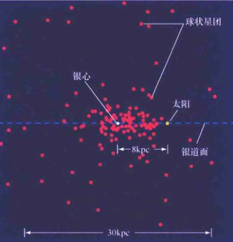
<div class="caption" style="clear: left;">
<strong>解说图23.9 球状星团分布</strong><br/>
        太阳与大量球状星团（粉色点）的中心并不重合。相反，在一个方向上发现的球状星团比其他方向要多。太阳的位置距离这个直径大约为30kpc的集合体的边缘很近。球状星团描绘出银晕中恒星的真实分布。
    </div>
<p>作为一次知识的卓越飞跃，沙普利意识到球状星团的分布能够描绘出银河系恒星的真实外延——也就是我们所说的<strong>银晕</strong>。在大量物质的包围中，距离太阳8kpc的位置就是<strong>银心</strong>。图23.9展示了基于现代观测数据的距离银心20kpc范围内的138个球状星团的分布。如图23.10所示，我们生活在这个巨大集合体的“郊区”——由穿过晕中心的一层薄薄的年轻恒星、气体和尘埃组成的银盘。自沙普利时代起，天文学家就在银经中确认了许多独立的恒星——也就是不属于任何球状星团的恒星。</p>
<p>沙普利利用球状星团定义银河系恒星分布的大胆解读，是人类理解自己在宇宙中的位置方面迈出的巨大一步。500年前，人们还认为地球是所有物质的中心，但哥白尼认为地球并不处在特殊的位置，也不是太阳系的中心。正如我们看到的，在沙普利所处的时代，主流思想认为太阳不仅仅是银河系的中心，也是宇宙的中心。但是沙普利却不苟同。通过球状星团的观测数据，就在一夜之间，他将银河系的大小比之前的估计提高了将近10倍，同时也将太阳放逐到银河系边缘！</p>
<h3>沙普利-柯蒂斯之争</h3>
<p>沙普利对银河系的大小以及我们所处的位置做出了巨大修正。奇怪的是，这一修正仅仅强化了他认为旋涡星云是银河系的一部分、而银河系基本上就是整个宇宙的错误观点。他认为存在其他与银河系一样大小的结构是难以置信的。1920年，在沙普利与利克天文台天文学家赫伯·柯蒂斯之间，展开了关于旋涡星云本质的著名科学论战（也参见第2页）。这里我们列举了几条这次论战的关键内容，以阐释科学知识发展过程中有时必经的弯路：</p>
<ol>
<li><strong>银河系的大小。</strong>沙普利正确地断定银河系的直径远比基于恒星计数得到的“传统”数值要大得多，但是却错误地认为，除了银河系，不存在其他相似大小的星系。柯蒂斯错误地接受了银河系的较小的尺寸，但是却正确地认为可能存在其他与银河系相似的星系。</li>
<!-- List continues on next page -->
</ol>
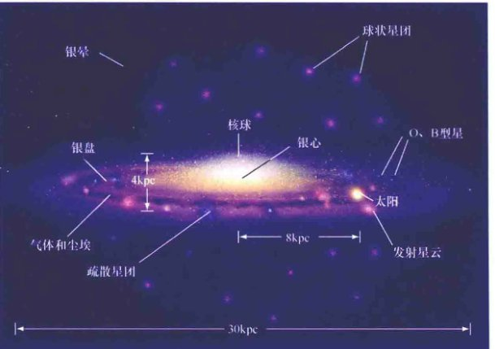
<div class="caption">
<strong>互动图23.10 银河系中的星族</strong><br/>
        基于对银盘内的年轻恒星和气体，以及银晕里年老恒星和球状星团的观测，天文学家建立了一个银河系结构的完整图像。这幅银河系（几乎）的侧向艺术假想图展示了年轻的蓝星和疏散星团、年老的红星以及球状星团的分布。（为清晰起见，太阳的亮度和大小被大幅度夸大了。）
    </div>
<!-- Page 11 -->
<ol start="2">
<li><strong>星云的分布。</strong>柯蒂斯在银盘以外发现了旋涡星云，并指出就像在许多侧向的旋涡星云中看到的一样，银盘面上有一“环状”的神秘物质遮挡了我们在银盘内的视线。沙普利简单地认为，由于千某些未知的原因，没有在银盘面上发现旋涡星云。在这点上，柯蒂斯几乎是完全正确的。但是请注意，当时的人们并不清楚星际尘埃的吸收效应。</li>
<li><strong>新星的观测。</strong>沙普利（正确地）认为，在旋涡星云中看到的一些新星的视亮度表明，如果这一星云处在较远的位置，就会具有极高的光度。柯蒂斯指出（同样正确地），这些反常事件有可能是更亮的另一类新星——今天，我们把它们称为<strong>超新星</strong>。</li>
<li><strong>星云的亮度和光谱。</strong>沙普利指出，如果是从远处观测银河系，那么测量得到的旋涡星云的亮度和颜色不应该是这样的，这也表明星云从本质上和银河系是不一样的。柯蒂斯没有找到答案。今天我们知道了这些差异是由于星际吸收和红化造成的，它们的存在使天文学家无法得到银河系的完整图像。柯蒂斯没有正确地注意到，如果星云是由大量恒星组成的，旋涡星云中的谱线和这些恒星集合体的谱线就大体相同。这也支持他关于存在与银河系相当的恒星系统的论断。</li>
<li><strong>星云的旋转。</strong>沙普利引用了部分旋涡星云的角自转速度的测量，结果表明，如果这些星云非常遥远、非常大，那么星云的自转速度就将超过光速。柯蒂斯简单地认为观测是错误的，但是他当时无法证明这一点。</li>
</ol>
<p>由此我们看到，对于这个问题，两人都做出了一些正确的和不正确的判断（或结论）。但是，当时的观测结果无法解决他们的分歧，而这场论战也无疾而终。不过，随着技术的大幅度发展，仅仅在数年之后的1925年，美国天文学家埃德温·哈勃便声称他观测到了仙女星系里的造父变星，并最终成功地测定了其距离。他的研究成果明确地证实了仙女星云是银河系之外的一个独立星系，并将哥白尼原理推广到了银河系。</p>
<div class="check-understanding">
        变星是否可以用来描绘银盘结构？
    </div>
<h2>23.3 银河系结构</h2>
<p>基于对恒星、气体与尘埃在光学、红外和射电波段的观测，图23.10显示了银河系盘、核球和晕不同的空间分布。银晕的外延很大程度上依赖于球状星团和其他晕星的光学观测。但是，正如我们所看到的，光学技术只能覆盖被尘埃包围的银盘的很小一部分。对于银盘结构更大尺度的认识很大一部分是来自于射电观测，尤其是原子氢产生的21厘米射电发射线。</p>
<p>气体分布的中心与球状星团系统的中心大致重合，大约位于距离太阳8kpc的地方。事实上，最准确的银心位置是通过银河系气体的射电观测得到的。银盘内恒星与气体的密度在距离银盘中心大约15kpc后开始急剧下降（尽管在距离50kpc的地方也已经观测到一些射电发射气体）。</p>
<h3>恒星的空间分布</h3>
<p>太阳近邻的银盘在垂直方向上较薄——厚度“仅仅”300pc，或者说大约是银河系直径(30kpc)的1%。不过，千万不要被迷惑了：即使你以光速行驶，也要花上一千年才能穿过银盘的厚度。对于银河系半径来说，银盘也许是薄的，但是对于人类而言，它却是巨大的。</p>
<p>实际上，银盘的厚度取决于测量对象。与类太阳恒星相比，年轻恒星和星际气体与银盘面的关系更紧密；而类太阳恒星比更年老的K型和M型矮星更靠近银盘面。这些差别的原因在于，恒星是在距离银盘面较近的星际云内部形成的，但随着时间的推移，由于与其他恒星和分子云之间的相互作用，恒星会向盘外部运动。因此，随着恒星年龄的增长，银盘面上面和下面的恒星丰度会逐渐增加。值得注意的是，这些理论并不适用于银晕，银晕内年老的恒星和球状星团的分布一直延伸到距离银盘面很远的空间。随后我们将看到，银晕似乎是银河系演化早期阶段的遗迹，并且比银盘的形成要更早。</p>
<!-- Page 12 -->
<p>近年来，不断进步的观测技术揭示了一类无论年龄还是空间分布，都介于年老的晕星与年轻的盘星之间的银河系恒星。它们是由年龄70~100亿年间的恒星组成的。这个被称为<strong>银河系厚盘</strong>的成分的分布范围大约有2~3kpc。前文提到的缓慢移动机制无法解释它较大的厚度。与银晕相似，这一成分似乎是银河系遥远过去的遗迹。</p>
<p>图23.10中也展示了银河系中心的<strong>核球</strong>，在银盘面内直径大约6kpc，垂直银盘面厚度约为4kpc。星际尘埃的遮挡使人们无法从光学图像中研究银河系核球的细致结构。但是，星际物质对长波段的影响较小，能够给出更清晰的图像[见图23.11及图23.3(b)]。对于核球内部及附近气体与恒星的细致测量表明，核球实际上形如一个橄榄球，宽度大约是长度的一半，长轴位于银盘面内。在这些观测的基础上，天文学家分析银河系内部有可能存在一个明显拉长或棒状的形态，而我们则可能生活在一个“棒旋”星系中。第2章将深入讨论这个问题。</p>
<h3>星族</h3>
<p>除了空间的分步之外，银河系的三个成分——盘、核球和晕在其他一些性质上也有显著的区别。第一，银晕几乎不含有气体或者尘埃——这与充满星际物质的盘和核球恰好相反。第二，盘、核球和晕星的外观和组成都存在明显的不同——银河系核球和晕中的恒星比盘星明显要更红一些。对其他旋涡星系的观测也表明有相同的趋势。在图23.2(a)与图23.3(a)中能够清楚地看到青白色彩的盘和淡黄色的核球。</p>

<div class="caption" style="clear: right;">
<strong>互动图23.11 银河系的红外图像</strong><br/>
        2μm全天巡天观测到的银河系盘与核球的广角红外图像。与图23.3(b)比较。[马萨诸塞大学 (UMass) / 加州理工学院 (Caltech)]
    </div>
<p>在天空中能看到的所有明亮的蓝色恒星都是银盘的一部分，年轻的疏散星团和恒星形成区也是。相反地，较冷较红的恒星——包括那些年老的球状星团里的恒星在盘、核球和晕里的分布更加均匀。尽管矮星的数量要大得多，但是因为主序O型和B型蓝超巨星比G、K和M型矮星要亮得多，因此银盘偏蓝。</p>
<p>对于盘和晕的恒星成分的区别可以这样解释：鉴于富气体的银盘是发生恒星形成的地点，因此银盘中包含各种年龄的恒星，而所有晕星都是年老的。晕里面缺少尘埃和气体就意味着没有新的恒星会在那里诞生，而恒星形成已经在很久以前就停止了——从我们今天观测到的晕星类型判断，至少是在100亿年以前。（大部分球状星团的年龄都在100亿~120亿年）。银河系核球内部的气体密度非常高，使这个区域成为发生剧烈恒星形成的地点，而且年老和年轻的恒星都混合在那里。核球缺少气体的外部区域具有与晕相似的性质。</p>
<p>这张图片的证据来自于晕星的光谱研究。研究表明，这些恒星的重元素（即比氦重的元素）丰度远比盘里的近邻恒星要低得多。每一颗恒星形成与演化的连续循环通过恒星核合成的产物增丰星际介质，并使得重元素随着时间稳步增加。因此，晕星中这些元素的匮乏与银晕形成于很久以前的观点是一致的。</p>
<p>天文学家经常把年轻的盘星称为<strong>星族I</strong>，而把晕星称为<strong>星族II</strong>。两个星族的想法最早出现在20世纪40年代，也就是人们第一次发现盘星与晕星的区别时。这些名字是过于简单化的，因为实际上在银河系中，恒星的年龄是连续变化的，不应把恒星简单地分成两个完全不同的“年轻”和“年老”的类别。不过，这已经成为广泛使用的专业术语了。</p>
<!-- Page 13 -->
<h3>轨道运动</h3>
<p>现在让我们把注意力转到银河系的动力学——也就是银河系包含的恒星、尘埃与气体的运动。银河系成员的内部运动是否是无序和随机的？或者是一个巨型“交通场景”的一部分？答案取决于我们的视角。我们在小尺度（太阳附近几十秒差距以内）上看到的恒星和云团的运动似乎是随机的，但是大尺度（成千上万秒差距）上的运动却更加规则有序。</p>
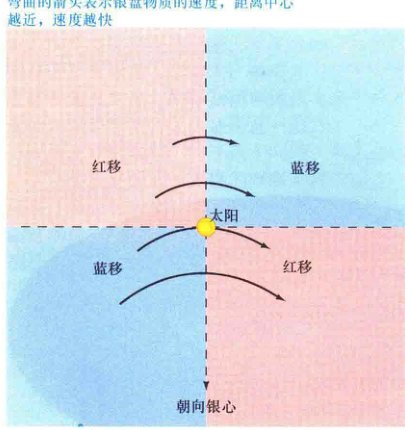
<div class="caption" style="clear: left;">
<strong>图23.12 银盘的轨道运动</strong><br/>
        太阳近邻的恒星和星际云呈现系统性的多普勒运动，表明银盘是按照某种特定的方式自转的。这四个银河系象限是以太阳而不是银心为参照点划分的，这主要是由观测地点决定的。因为太阳的轨道速度比位于更大半径的恒星和气体要快，因此它的运动方向远离左上的物质，而接近右上，就导致了上面所说的多普勒移动。同样，左下象限的恒星与气体在朝向我们运动，而右下则在远离。
    </div>
<p>当我们从不同的方向看银盘时，会发现一种清晰的运动模式（见图23.12）。图中右上和左下来自于恒星和星际气体云的辐射基本上是蓝移的。与此同时，左上与右下的恒星和气体的辐射则是红移的。换句话说，银河系中有些区域（蓝移方向）是朝向太阳运动的，而另外一些区域（红移方向）则是远离我们的。</p>
<p>对太阳近邻恒星和气体云的位置和速度的研究得到了两个关于银盘运动的重要结论。</p>
<p>第一，整个银盘在旋转。恒星、气体和尘埃几乎都在绕着银心做圆周运动，其轨道受到银河系引力场的控制。太阳邻域的轨道速度大约是220km/s。因此，在距离银心8kpc的太阳位置处的物质需要花上2.25亿年（这个时间间隔有时被称为<strong>银河年</strong>）才能完成一周的绕转。</p>
<p>第二，银河系的自转周期取决于相对于银心的距离，距离越近，周期越短；反之越长。也就是说，银盘的旋转不是刚体的，而是<strong>较差</strong>的。依巴谷卫星对太阳邻域数百pc以内的恒星进行了精确的测量，这对测量银河系的这些重要性质具有特殊的价值。在仙女星系和许多其他旋涡星系中还观测到了相似的较差自转。</p>
<p>这张相对银心进行有序圆周运动的图只对银盘适用——银晕和核球中的恒星并不那么守规矩。银晕中年老的球状星团和银晕以及核球中暗弱偏红的独立恒星并不遵守银盘中定义明确的运动模式。相反，它们的轨道方向在很大程度上是随机的。尽管这些天体围绕银心运动，但是运动方向各异，运动轨迹充满了整个三维空间，而不是一个近似的二维的盘。</p>
<p>图23.13将核球和晕星的运动与银盘恒星更加规则有序的运动进行了对比。在距离银心任意距离的位置，核球或者银晕的恒星的运动速度与相同半径的盘星的旋转速度相当，只是朝向各个方向而不是单一方向。它们的轨道会反复穿过银盘面。（因为相对于单颗恒星的直径，星际距离太大，因此它们不会与盘星相撞——一颗恒星甚至一个星团穿过银盘时就像银盘根本不存在——见3.2节）。太阳近邻的一些著名的恒星——例如，明亮的巨星大角星——实际上就是“恰好路过”银盘的晕星，轨道带着它们远离银盘而去。</p>
<p>最近，天文学家在银晕中发现了无数的<strong>潮汐流</strong>——这些成群的恒星被认为是球状星团甚至是小星系被银河系的潮汐场撕裂后的遗迹（见2.1节）。就像彗星消失后，微流星体沿着被瓦解的母彗星的轨道涌入太阳系一样，潮汐流里的恒星在其母星团或者母星系原来的轨道周围分散开来。我们将会在第3章更详细地讨论相关过程。</p>
<p>表23.1比较了银河系三个基本成分的部分关键特性。</p>
<p class="note" style="font-size: 0.9em; color: #666;">
        事实是，晕星也存在围绕银心的整体旋转，但是它们的旋转成分被更大的随机运动成分给淹没了。核球恒星的运动也存在一个旋转成分，而且比晕星的要大，但相对核球恒星运动的随机成分还是比较小的。
    </p>
<!-- Page 14 -->
<table>
<caption>表23.1 银盘、银晕及核球的特性概览</caption>
<thead>
<tr>
<th>银盘</th>
<th>银晕</th>
<th>核球</th>
</tr>
</thead>
<tbody>
<tr>
<td>高度扁平</td>
<td>接近球状——轻微扁平</td>
<td>有些扁平，在银盘面内被拉长（“橄榄球形状”）</td>
</tr>
<tr>
<td>包含年轻和年老的恒星</td>
<td>只包含年老恒星</td>
<td>包含年轻和年老恒星；距离银心越远，年老恒星越多</td>
</tr>
<tr>
<td>包含气体和尘埃</td>
<td>不含气体和尘埃</td>
<td>包含气体和尘埃，尤其是在内部区域</td>
</tr>
<tr>
<td>持续恒星形成区</td>
<td>在过去100亿年里没有恒星形成</td>
<td>内部区域持续有恒星形成</td>
</tr>
<tr>
<td>气体和恒星在银道面内做圆周运动</td>
<td>恒星存在三维随机运动</td>
<td>恒星有随机运动，同时也有围绕银心的整体旋转</td>
</tr>
<tr>
<td>旋臂</td>
<td>没有明显的子结构</td>
<td>中心区域极有可能被拉长成棒状；中心附近存在气体和尘埃环</td>
</tr>
<tr>
<td>整体呈白色，伴有蓝色旋臂</td>
<td>颜色偏红</td>
<td>淡黄色</td>
</tr>
</tbody>
</table>
<div class="check-understanding">
        为什么天文学家把银河系的盘和晕看成是不同的成分？
    </div>
<h2>23.4 银河系形成</h2>
<p>是否存在演化图像能够自然地解释我们今天看到的银河系结构呢？答案是肯定的。而且它能够将我们带回到100多亿年前的银河系诞生之初。虽然不是所有的天文学家都认同演化中的全部细节，但是整体图像已经得到了广泛认可。为了简化，我们在这里把讨论内容限制在银盘和银晕上；在很多方面，核球的性质都介于这两种极端状态之间。图23.14阐释了目前关于银河系演化的观点，起点是一团收缩的原星系气体云。</p>
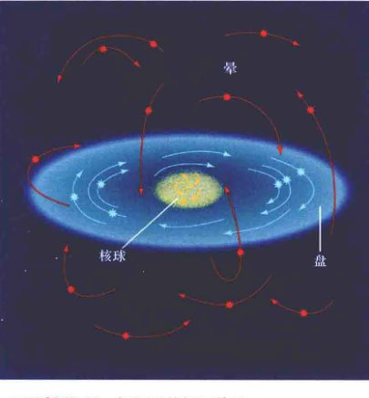
<div class="caption" style="clear: left;">
<strong>互动图23.13 银河系的恒星轨道</strong><br/>
        银盘内的恒星（蓝色曲线）围绕银心做有序的圆周运动。相反，晕星（橙色曲线）则围绕中心做随机运动。典型的晕星轨道会到达银盘以上很高的位置，经过银盘面从另一侧穿出，并远离银盘运动。核球恒星的轨道性质介于盘星与晕星之间。
    </div>
<p>当第一代银河系恒星以及球状星团形成时，银河系内的气体还没有堆积成盘。相反，它弥漫在一个不规则且非常延展的空间区域内，在各个方向的跨度都达到几十kpc，如图23.14(b)所示。当第一代恒星形成时，这些恒星分布在整个空间中。今天，它们的分布（银晕）就反映了这一点——也就对应着它们诞生时的印记。许多天文学家认为，在一些更小的系统内，更早地形成了最早一代的恒星，而这些系统后来就并合形成了银河系，如图23.14(a)所示。许多恒星很有可能都是在并合过程中，随着星际气体云的碰撞和坍缩而诞生的。无论细节如何，任意一种机制产生的银晕在今天看起来都差不多。</p>
<p>从演化早期开始，自转使得银河系内的气体变得扁平并形成一个相对较薄的盘，如图23.14(c)所示。从物理上来说，这个过程与太阳星云在太阳系形成时的扁平过程相似，只是发生在一个相对极大的尺度上。银晕中的恒星形成在数十亿年前就停止了，那时的原初物质——气体和尘埃冷却并掉落到银盘上。银盘上持续的恒星形成使它呈现蓝色的光泽，但是银晕中生命短暂的明亮蓝星早已熄灭，只剩下寿命较长的红色恒星使银晕呈现出典型的粉色光晕。银晕非常古老，而银盘却充满年轻的活力。</p>
<!-- Page 15 -->
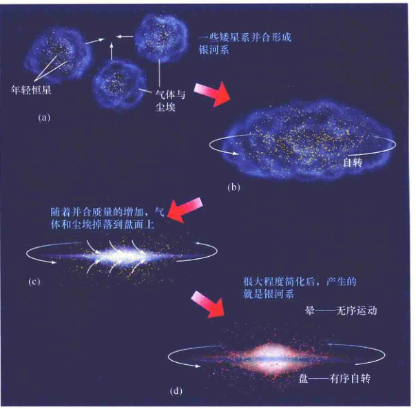
<div class="caption" style="clear: right;">
<strong>图23.14 银河系的形成</strong><br/>
        (a) 银河系可能是由几个较小的系统并合形成的。(b) 早期，银河系的形状不规则，气体遍布整个体积中。当恒星在这一阶段形成时，它们的运动轨道将其带入一个绕转新生银河系的三维空间中。(c) 那时，气体和尘埃掉落到银道面上，从而形成旋转的盘。已经形成的恒星则被留在银晕中。(d) 在盘上形成的新恒星继承了它的整体自转，因此会围绕银心做有序的圆周运动。
    </div>
<p>包含中等年龄恒星的厚盘也许能代表，当气体仍然在逐渐形成扁平盘面的过程中，恒星形成的一个中间阶段。</p>
<p>最近关于银盘恒星组成的研究表明，银晕气体的掉落直到今天还在继续。目前，最好的恒星形成和恒星核合成的模型预言，除非银盘中的气体仍然在被来自于银晕的、相对尚未演化的气体，以每年5~10倍太阳质量的速度“稀释”，否则盘星中重元素的比例应该比实际观测到的要高。看似并没有多少质量，但是经过数十亿年的积累，实际上已经累积占据了银盘总质量中的相当显著的比例（见23.6节）。</p>
<p>这一理论同时也揭示了晕星的随机运动与盘星更加有序的运动[见图23.14(d)]。当银晕形成时，形状不规则的银河系只是在做非常缓慢的自转，因此不存在物质集中运动的方向。所以，晕星在形成之时（或者它们的母系统并合时）能够自由地在几乎任意的方向上运动，导致我们今天所看到的银晕的随机运动。但是，在银盘形成之后，在它的气体和尘埃中形成的恒星继承了它的自转运动，因而会沿着明确的圆轨道运动。而厚盘的轨道性质则再次印证了当它们形成时，仍然有气体在掉落银盘面。</p>
<p>原则上，银河系的结构能够印证形成这个星系的条件，但是实际上，我们的生存系统的复杂性以及这一系统形成后多种竞争性物理过程对其观测外观的改变，都为解释观测增加了难度。因此，我们对银河系的早期演化阶段仍然知之甚少。我们将在第2章和第3章回到星系形成这一课题。</p>
<div class="check-understanding">
        为什么没有年轻的晕星？
    </div>
<!-- Page 16 -->
<h2>23.5 银河系的旋臂</h2>
<p>如果我们想要看到近邻空间之外，并全面地研究银盘，就不能只依靠光学观测，因为星际吸收会严重限制我们的视野。20世纪50年代，天文学家发明了一种非常重要的工具来探究银河系内气体的分布：分光射电天文学。</p>
<h3>银河系的射电图</h3>
<p>观测银河系星际气体的关键手段是21厘米射电发射线，这种发射线是由原子氢和分子云复合体中形成的许多射电分子谱线产生的。长波段射电波基本上不受星际尘埃的影响，因此它们几乎能够畅通无阻地穿过银盘，使我们“看到”更远的距离。因为氢是目前为止星际空间中丰度最高的元素，所以21厘米信号的强度足以观测到大部分的银盘。观测包括一氧化碳在内的“示踪体”分子的谱线，能够用于研究最致密星际云的分布。</p>
<p>早些时候，我们提到过观测太阳附近数百秒差距内的恒星，使天文学家能够测量银河系内太阳邻域的自转速度。如图23.15所示，为了探测更远的距离，天文学家通常会利用射电观测（这里以21厘米辐射为例），因为长波段射电波几乎不受星际尘埃的影响，从而能够用来研究整个银盘的本质。</p>
<p>然而，发射射电辐射的云团的距离很难确定。为了确定云团在盘上的位置，天文学家利用所有可能的数据，并结合牛顿力学的知识，构造了一个银盘内恒星和气体自转的<strong>数学模型</strong>。假定为圆轨道，通过这一模型就能够将测得的视向速度转化为视线方向上的距离。与天文学许多其他领域一样，理论与观测相辅相成：数据限制理论模型，而模型反过来为进一步解释观测提供了理论框架。</p>

<div class="caption">
<strong>图23.15 银盘中的气体</strong><br/>
        因为银盘存在较差自转（内部转动比外部快），所以来自视线方向上不同的氢物质团的21厘米射电信号会存在不同的多普勒频移。在多个不同方向的重复观测可以让天文学家了解银河系中气体的分布。
    </div>
<p>射电天文学家把观测与银河系模型相结合，将测量结果转换成沿视线方向气体分布的具体信息。考虑到23.3节提到的较差自转，测量得到的云团速度取决于它与太阳之间的距离（见图23.15），而银河系模型则将这两者联系了起来。此外，观测信号的强度也是测量云团气密度的一种手段——更致密的云团包含更多的气体，从而发出更多的辐射。因此，已知方向、距离和密度，天文学家就可以利用沿不同视线方向的观测数据来描绘银河系的射电辐射气体。</p>
<h3>旋涡结构</h3>
<p>在大尺度上，银盘内的星际气体呈现出有组织的模式。在中心区域，银盘气体在核球内部显著膨胀。已经在距离银心至少50kpc的地方观测到射电发射气体。在银盘内大约20kpc的范围内，气体被束缚在距离银盘面大约100pc的空间内。在这个距离之外，气体的分布有些弥散，达到几kpc的厚度，并且呈现出一定程度的被“扭曲”的迹象，这可能是因为一对近邻星系的引力影响（在第2章中将讨论；同时参见图23.16）。</p>
<!-- Page 17 -->

<div class="caption" style="clear: left;">
<strong>互动图23.16 银河系的旋涡结构</strong><br/>
        这幅银河系的假想图展示了银盘的旋涡结构。它是以过去几十年的许多天文学家团队的观测数据为基础的，包括恒星、气体和尘埃的射电及红外图。从银盘面以上100kpc的视角出发，是观察旋臂最好的位置。很显然，旋臂是从一个长度比宽度大两倍的棒状结构中延伸出来的。所有的物体都是按比例绘制的（除了接近顶端代表太阳的黄点被放大之外）。左侧的两个小斑点是被称为麦哲伦云的矮星系，我们会在第2章介绍它们。[改编自喷气推进实验室(JPL)]
    </div>
<p>射电波段研究可能提供了我们生活在一个旋涡星系里的最有力的直接证据。图23.16是从银盘上方远处看到的银河系外观的艺术想象图（基于观测数据）。这幅图清晰地展示了<strong>银河系旋臂</strong>，风车状结构始于核球并延伸到银盘外部。太阳位于这些缠绕着大部分银盘的旋臂中的一条的边缘。顺便提一下图23.9、图23.10和图23.16的尺度标识：银河系球状星团分布（见图23.9）、银盘的亮星成分（见图23.10）以及已知旋臂结构（见图23.16）的直径大体相同——大约为30kpc。这是在宇宙中观测到的相当典型的旋涡星系尺度。</p>
<h3>旋臂的幸存</h3>
<p>银河系旋臂的构成绝不仅仅是星际气体和尘埃。对太阳附近1kpc左右的银盘研究表明，年轻恒星和原恒星——发射星云、O型和B型星，以及最近形成的疏散星团——也都分布在与星际云分布紧密相关的旋涡结构中，这显然可以推断，旋臂是银盘的一部分，在这里发生了恒星形成。前面列出的几类明亮的年轻恒星是能够很容易看到远处其他星系旋臂的主要原因，如图23.3(a)所示。</p>
<p>理解旋涡结构的一个核心问题是如何解释这一结构持续了这么长的时间。基本问题很简单：较差自转使得任何“绑”在银盘物质上的大尺度结构都不可能幸存。图23.17展示了由同样一组恒星与气体晕组成的旋涡结构必然会在几亿年的时间里消失。那么，为什么尽管存在较差自转，银河系的旋臂仍然能在这么长的时间内保持其结构呢？</p>
<p>关于旋臂存在的一个主要解释是认为它们是<strong>旋涡密度波</strong>——螺旋形的气压波在银盘中运动、并且在运动过程中挤压星际气体云并触发了恒星的形成过程。我们所看到的旋臂被定义为由密度波产生的比普通气体云更致密的云团，以及旋臂波通道上所形成的新生恒星。</p>
<p>这一关于旋涡结构的解释避免了较差自转带来的问题，因为密度波的模式并不与银盘任意特定区域绑定。我们看到的旋涡仅仅是在银盘中运动的模式，而不是从一个地方运输到另一个地方的大量物质。密度波穿过构成银盘的恒星和气体的方式，就像是声波穿过空气或是海浪穿过水面，在不同的时间压缩盘上的不同部位。尽管银盘物质的自转速度随着到银心距离的不同而变化，但密度波本身会保持其完整性，从而形成银河系的旋臂。</p>
<p>事实上，在银盘大部分可见区域内（距离银心大约15kpc以内），预计旋臂密度波模式的旋转速度要比恒星和气体慢。因此，如图23.18所示，当银河系物质赶上密度波时，会暂时慢下来并在途中压缩，然后再继续运动。（探索1-2列举了一个更加实际的类似过程）。</p>
<!-- Page 18 -->

<div class="caption">
<strong>互动图23.17 银河系的较差自转</strong><br/>
        银河系的盘以较差方式自转，图中白色小箭头表示银盘的角速度。如果旋臂与银盘物质以某种方式绑定，这种不均匀的自转就会使旋涡模式结束，并在数亿年的时间内消失。旋臂的寿命因太短而无法解释今天观测到的旋涡星系的数目。
    </div>

<div class="caption" style="clear: left;">
<strong>互动图23.18 旋涡密度波</strong><br/>
        密度波理论认为，在银河系及许多其他星系中看到的旋臂是在银盘物质中运动的气体压缩和恒星形成的波。气体从旋臂后方进入，受到压缩并形成恒星。尘埃带、高密度气体区域和新形成的O、B型星勾画出旋涡的模式。右边的插入图展示了旋涡星系NGC1566，它具有许多前文所描述的特征。[美国大学天文联盟 (AURA)]
    </div>
<p>随着物质从后面进入密度波，气体受到压缩并形成恒星。尘埃带标志着密度最高的气体区域。最突出的恒星——明亮的O型和B型蓝巨星寿命非常短，因此年轻的星协、发射星云以及包含长主序的疏散星团只能在旋臂中被观测到，也就是它们的诞生地，正好位于尘埃带前方。这些年轻系统的亮度强调了旋涡结构。顺流而下，在旋臂的前方，我们主要能看到较为年老的恒星与星团。这些天体有足够长的时间在形成之后向密度波外部运动并挣脱出来。经过数百万年的时间，它们的随机运动加上围绕银心的整体自转，扭曲并最终瓦解了它们原初的旋涡形态，成为普通盘星的一部分。</p>
<p>顺便注意一下，虽然图23.18所示的旋涡各存在两条旋臂，但天文学家并不确定银河系的旋涡结构究竟是由几条旋臂构成的（见图23.16）。理论并没有在这一点上给出有力的预言。</p>
<!-- Page 19: Discovery 1-2 -->
<aside class="sidebar">
<h3>探索 23-2：密度波</h3>
<p>20世纪60年代，美国天体物理学家C.C.林和徐遐生提出了一种方式，使银河系旋臂能在多次银河系自转后保持下来。他们认为旋臂本身并不包含“永恒的”物质，因此也不应该被视为整体穿过银盘的恒星、气体和尘埃的集合体——这样的集合很容易会被较差自转摧毁。相反，应当把旋臂假定为密度波——一种横扫过银河系的波的压缩和膨胀。</p>
<p>水中的波会在一些地方暂时堆积物质（波峰），同时在另一些地方降低（波谷）。尽管组成波峰和波谷的水不会随波运动，但波动模式却得以在水中传播。类似地，当旋涡密度波遇到星系物质时，气体被压缩并形成密度稍高的区域。当星系物质遇到密度波，就会在波经过时暂时地减速并被压缩，随后继续运动。压缩会触发新的恒星与星云的形成。以这种方式，旋臂重复地形成再形成，但不会完全消失。C.C.林和徐遐生表示，这个过程实际上可以使旋涡模式保持很长一段时间。</p>

<p>附图以一种更加熟悉的方式说明了密度波的形成：一队维修人员的缓慢行驶造成高速路上的交通堵塞。当汽车接近维修队时会短时间减速。当经过施工地点后再次加速并继续前进。结果就会像一架在高空飞行的监控直升机看到的那样，一个交通高密度区存在于维修队施工地点附近并随着施工地点移动。但是，在路边的观察者会看到堵塞地点的车一直在变化。汽车不断追上交通瓶颈，缓慢地通过然后再次加速，随后被后面到达的车辆所替代。</p>
<p>交通堵塞与银河系旋臂中恒星的高密度区域相似。就像交通密度波并未与某一批特定车辆联系在一起一样，旋臂也不附属于某一块特定的银盘物质。恒星和气体进入一条旋臂，出现一段时间的减速，然后继续沿着围绕银心的轨道运动。结果就是在不同时间、银盘上的不同位置，存在一个恒星和气体高密度的运动区域。同时值得注意的是，就像银河系一样，密度波的运动要比整体的交通流要更慢，而且完全无关。</p>
<p>我们可以进一步地扩展交通的类比。大部分司机都很清楚，即使施工队在夜间停止工作、回家之后，对交通的滞留影响仍然会持续很久。相似地，在产生密度波的扰动减退之后，旋涡密度波仍然会在盘内继续运动。根据旋涡密度波理论，这与银河系中发生的情况完全一样。一些过去的扰动产生了密度波，而密度波此后会持续在银盘中运动。</p>
</aside>
<p>另一种可能是恒星的形成驱动了密度波，而不是后者驱动前者。想象在银盘某处存在一排新形成的大质量恒星。这些恒星形成时产生发射星云，它们死亡时产生超新星，并将激波发散到周围气体中，从而触发新的恒星形成。因此，如图23.19(a)所示，一组恒星的形成提供了另一些恒星的形成机制。计算机模拟表明，以这种方式产生的恒星形成波有可能显现出部分旋涡的形态，并且能将其模式保持一段时间。这一过程有时也被称为<strong>自传播恒星形成</strong>。但这个过程只能产生在部分星系中看到的旋涡碎片（图23.19b）。显然不能产生在其他星系和银河系中看到的星系尺度的旋臂。很可能是多个过程的作用产生了我们所看到的壮观旋涡。</p>
<!-- Page 20 -->
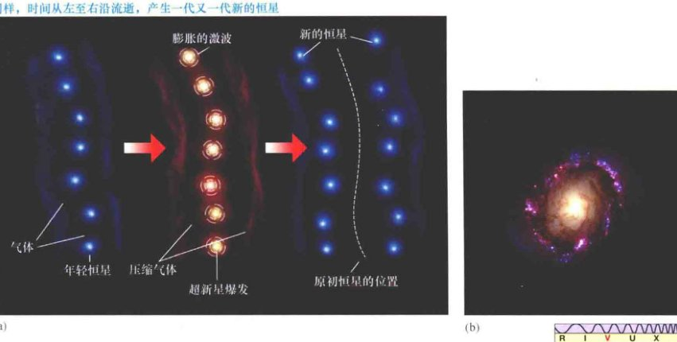
<div class="caption">
<strong>图23.19 自传播恒星形成</strong><br/>
        (a) 按照这种旋臂形成理论，一组恒星的形成及后期演化产生的激波触发新一轮的恒星形成。这里利用超新星爆发说明问题，但发射星云和行星状星云的形成同样重要。(b) 这一过程很可能产生了一些星系中的旋臂，如图中真彩色展示的星系NGC4314中看到的部分旋臂。[R. 根德勒 (R. Gendler)]
    </div>
<h3>旋涡结构的起源</h3>
<p>一个亟要的问题（很不幸，不能被前文描述的两种理论解释）是这些旋涡从何而来？是什么产生了最初的密度波，抑或是产生了以演化驱动旋臂的新生恒星？科学家猜测是：(1) 伴星系（麦哲伦云，将在第2章中探讨）的引力作用，(2) 核球附近气体的不稳定性，或是 (3) 核球本身棒状的不对称性可能会对盘产生足够的影响以至于产生这样的过程。</p>
<p>越来越多的证据支持第一种可能性，因为许多其他的旋涡星系在不太遥远的过去似乎都受到了近邻系统的引力相互作用（见第2章）。然而，许多天文学家仍然认为另外两种推断具有相同的可能性。例如，他们指出存在孤立的旋涡，其结构显然不可能是外部相互作用的结果。事实上我们仍然不确定星系——包括银河系究竟是如何拥有如此美丽的旋臂的。</p>
<div class="check-understanding">
        为什么不能简单地认为旋臂是环绕银心运动的气体和年轻恒星？
    </div>
<h2>23.6 银河系的质量</h2>
<p>我们可以通过研究银盘内气体云和恒星的运动来测量银河系的质量。回顾牛顿引力定律（开普勒第三定律的修订形式）将互相绕转的两个物体的周期、轨道大小和质量联系起来：</p>
<div style="background:#eee; padding:10px; text-align:center; font-family:serif; margin: 20px 0;">
        总质量（太阳质量） = 轨道半径(AU)<sup>3</sup> / 轨道周期(年)<sup>2</sup>
</div>
<p>正如我们在前面看到的，太阳与银心的距离大约为8kpc，而太阳的轨道周期为2.25亿年。将这些数字代入上述公式，我们得到的质量为 $(8000 \times 206000)^3 / (225000000)^2$，将近 $9 \times 10^{10}$ 太阳质量——太阳质量的900亿倍！</p>
<p>但我们刚才测量的是什么质量？如果我们将类似的计算应用在绕转太阳的行星上，那么就不存在歧义：计算的结果就是太阳的质量。但是，银河系的质量并不集中在银心（不像太阳的质量集中在太阳系的中心）；相反，银河系物质分布在一个很大的空间里。其中一些位于太阳的轨道内（也就是距离银心8kpc以内）。究竟有多大比例的银河系质量控制着太阳的轨道呢？300年前，艾萨克·牛顿回答了这个问题：太阳的轨道周期是由位于太阳轨道内的那部分银河系决定的（见图23.20）。这就是上述公式计算出来的质量。</p>
<!-- Page 21 -->

<div class="caption" style="clear: left;">
<strong>图23.20 为银河系称重</strong><br/>
        围绕银心运动的恒星或气体云的轨道速度仅仅是由轨道内部（灰色阴影球内部）的银河系质量决定的。因此，为了测量银河系的总质量，我们必须观测距离银心更远的天体。
    </div>
<h3>银河系的自转</h3>
<p>太阳围绕银心的运动告诉我们，位于太阳轨道内的银河系的总质量约为900亿个太阳质量，但却没能告诉我们太阳轨道之外的质量——距离中心8kpc以外的质量。如果要确定更大尺度的银河系质量，我们必须测量距离银心较远的恒星和气体的轨道运动。天文学家发现，完成这项任务最有效的方法就是对银盘上的气体进行射电波段的观测，因为射电波相对而言不会受到星际吸收的影响，因此可以让我们探测到太阳轨道之外更远的距离。在这些研究的基础上，射电天文学家确定了到银心不同距离的银河系的自转速度。因此得到旋转速度与到中心距离的关系图（见图23.21），图中的曲线被称为银河系的<strong>自转曲线</strong>。</p>
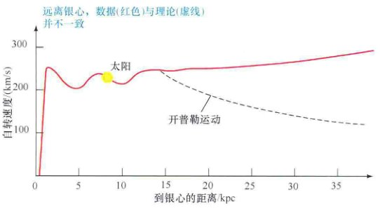
<div class="caption" style="clear: right;">
<strong>图23.21 银河系的自转曲线</strong><br/>
        银河系自转曲线就是将自转速度与银心距离在图中进行比较。如果银河系在大部分已知旋涡结构边界的15kpc处突然“中断”，那么对应的自转曲线应如虚线所示。事实上，红色曲线并不符合这条虚线，而是在这条虚线上方，表明在这一半径之外必然存在其他看不见的物质。
    </div>
<p>获得了银河系的自转曲线之后，我们就可以重复前面对银心任意距离内总质量的计算。例如，我们发现了距离银心15kpc以内的质量——球状星团和已知旋涡结构确定的尺度——大约是 $2 \times 10^{11}$ 倍太阳质量，大约是太阳轨道内质量的两倍。银河系的物质分布是否在光度骤减的15kpc外存在“截断”呢？答案出人意料地是“不”。</p>
<p>牛顿运动定律预言，银河系所有的质量都在可见结构的边缘以内，而15kpc以外的恒星和气体的轨道速度会随着到银心距离的增加而减小，就像距离太阳越远的行星的轨道速度会减小一样。图23.21中的虚线表明这种情况下应该看到的自转曲线，但真实的自转曲线却截然不同：不但没有在较大距离处减少，反而呈现轻微的上升，一直延伸到测量极限。这种轻微的上升表明，在太阳轨道之外，逐渐增大的半径范围内包含的总质量也在继续增加，明显能够持续到至少40kpc或50kpc的距离处。</p>
<p>根据这一节开始时列出的方程，40kpc以内的质量大约为 $6 \times 10^{11}$ 倍太阳质量。既然距离银心15kpc以内的质量是 $2 \times 10^{11}$ 倍太阳质量，那么我们可以推断在银河系发光的部分——恒星、星团和旋臂组成的部分之外，还存在至少比内部大两倍的质量！</p>
<h3>暗物质</h3>
<p>以这些银河系自转曲线的观测为基础，现代天文学家认为，银河系的发光部分——由球状星团和旋臂描绘的部分，仅仅是“银河系的冰山一角”，银河系实际上要大得多。这个可见光区域被一个延展的不可见<strong>暗晕</strong>包围着，这个暗晕让包含恒星与球状星团的内晕相形见绌，同时也延伸到曾经被认为是银河系边界的15kpc以外非常遥远的区域。但这一暗晕是由什么组成的？我们所探测到的恒星或者星际物质不足以解释计算所得到的那么多质量。显而易见，我们只能得到这样的结论：银河系中的大部分质量是以不可见的<strong>暗物质</strong>形式存在的，而目前我们还无法理解这种物质。</p>
<!-- Page 22 -->
<p>值得一提的是，即使是银河系的“可见”部分也包含大量的暗物质。通过直接测量恒星光度以及星际介质的射电辐射，可以估算出距离银心15kpc以内的恒星和气体的总质量大约是 $1 \times 10^{11}$ 倍太阳质量。其中大部分的质量都分布在银盘中。将这一质量与利用银河系自转曲线推算的结果相比较，我们可以看到，即使在这一可见区域，暗物质仍然占据了银河系总质量的三分之二。</p>
<p>这里的术语 dark (暗) 并不仅仅指代在可见光波段不可探测的物质：（到目前为止）这种物质逃过了从射电波段到伽马射线所有波段的探测。我们只能通过它的引力作用才能知道其存在。暗物质不是氢气（原子或分子），也不是由普通恒星组成的。考虑到它必须占据的总质量，如果这种物质是以上述任意一种方式存在的话，那我们早就应该探测到了。其本质和对星系及宇宙演化的影响是当今天文学最重要的问题之一。</p>
<p>科学家们提出了许多此类暗物质的候选体，尽管无一得到证实。恒星质量大小的黑洞可能提供一些不可见的质量，但考虑到它们是（相对稀少的）大质量恒星演化的产物，因此不大可能有足够多的此类天体隐藏有如此大量的银河系物质。目前，最有力的“恒星类”竞争者是<strong>褐矮星</strong>——从未到达核心核燃烧阶段的低质量原恒星天体——白矮星和暗弱、低质量的红矮星。用专业术语来说，这些天体被统一称为<strong>晕族大质量致密天体</strong>，或者简称为 <strong>MACHOs</strong>。原则上，它们大量存在于银河系中，但因它们非常暗弱而极难观测到。</p>
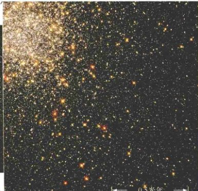
<div class="caption" style="clear: right;">
<strong>图23.22 失踪的红矮星</strong><br/>
        哈勃太空望远镜高灵敏度的可见光波段观测显然排除了暗弱红矮星作为暗物质候选体的可能性。这里展示的天体，球状星团杜鹃座47，是银河系中众多的搜寻区域之一。插入图是部分星团的高分辨率哈勃图像。并没有找到和预想一样的、数量足以解释银河系暗物质的红矮星。（图中显示的红色恒星是巨星。）[英澳望远镜 (AAT)、美国国家航空航天局 (NASA)]
    </div>
<p>哈勃太空望远镜观测到的球状星团似乎并不支持第三种晕族大质量致密天体的可能性。图23.22展示了一幅哈勃拍摄的相对较近的球状星团的图像——它的距离非常近，如果其中存在非常暗弱的红矮星，我们就能够探测到。哈勃数据表明，在0.2太阳质量处存在截断，质量低于这一数值的恒星数量比此前预想的要少得多。由此可见，至少在银晕中，极低质量的恒星非常罕见。</p>
<!-- Page 25 continued logic -->
<p>一种完全不同的可能性是，暗物质是由弥漫整个宇宙空间的奇异亚原子粒子组成的。为了解释暗物质的性质，这些粒子必须具有质量（才能产生观测到的引力效应），但同时又几乎不和“普通”物质发生相互作用（否则我们就能够看到它们）。满足上述要求的一类候选粒子被称为<strong>弱相互作用大质量粒子</strong>，或者 <strong>WIMPs</strong>。许多天体物理学家认为，这种“暗物质粒子”可能是在宇宙极早期大量形成的。如果有足够数量的此类粒子存活到今天，就有可能解释所有存在的暗物质。我们将在第X章详细讨论这种可能性及其深远意义。但是，由于探测难度非常大，所以很难验证这些观点。地面上已经开展了一些探测试验，但是至今无果。</p>
<p>有几位天文学家针对“暗物质难题”提出了一种截然不同的解释。他们指出，解决问题的答案也许并不在于暗物质的本质，而是需要修改牛顿引力定律，增加大尺度（星系层面的）引力，从而在根本上避免暗物质存在的必要性。需要强调的是，绝大部分科学家并不认同这种观点。但是，这种非正统答案的提出反映了目前水平的不确定性。暗物质是天文学领域至今悬而未决的谜团之一。</p>
<!-- Page 23 -->
<h3>搜寻恒星暗物质</h3>
<p>阿尔伯特·爱因斯坦的广义相对论预言，一束光能够被引力场弯折，而这一点已经被近距离经过太阳的星光束所证实。最近，研究人员已经利用这一关键要素进一步了解了恒星暗物质的分布。对于掠过太阳的光线，这种效应并不明显，但是它使从地球上看到遥远而不可见的恒星天体成为可能。让我们来进行说明。</p>
<p>想象你正看着一颗遥远的恒星，恰好有一个暗弱的前景天体（一颗晕族大质量致密天体，例如一颗褐矮星或者白矮星）经过你的视线。如图23.23所示，中间的天体使得朝向你的光比正常情况下稍多一点，因此产生一个暂时但却非常明显的遥远天体的增亮。在某些方面，这种效应就像是利用透镜来汇聚光线，这一过程因而被称为<strong>引力透镜效应</strong>。前景天体被称为<strong>引力透镜天体</strong>。引力透镜过程中增亮的程度和持续的时间取决于透镜天体的质量、距离和速度。通常情况下，背景恒星的视亮度会在数周时间内增加2~5倍。因此，即使不能直接看到前景天体，它对来自背景恒星的光线的作用也会使其能够被探测到。（在第3章中，我们将看到宇宙中其他更大尺度的引力透镜的例子）。</p>
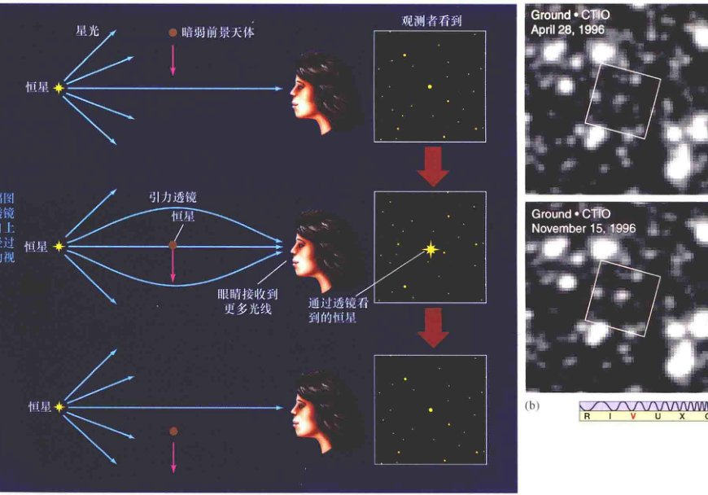
<div class="caption">
<strong>图23.23 引力透镜</strong><br/>
        (a) 暗弱前景天体（例如一颗褐矮星）的引力透镜效应能使一颗背景恒星暂时性的显著增亮，同时也提供了一种探测不可见恒星暗物质的方法。(b) 这两幅图像展示了透镜现象中一颗恒星的增亮。这意味着在两幅时间间隔为6个月的图像中心的未知恒星前面，经过了一个质量很大但是不可见的天体。[美国大学天文联盟 (AURA)]
    </div>
<p>当然，相比银河系的距离尺度来说，恒星非常小，因而从地球上看去，一颗恒星近乎直接从另一颗恒星前面经过的概率极低。但是，通过数年时间的每隔几天对成千上万颗恒星进行观测（利用自动化望远镜以及高速计算机能减少处理如此大量数据的负担），天文学家已经观测到了足够多的这类现象，并能够估计银晕中的恒星级暗物质量。这一技术代表了一种探究银河系结构的振奋人心的新方法。观测结果与小质量白矮星透镜的结果一致，表明这类恒星可以解释相当一部分动力学研究所预言的暗物质——可能高达20%，不过显然不是全部。</p>
<!-- Page 24 -->
<p>尽管如此，我们需要记住，暗物质的本质并不是一个非此即彼的命题。完全可以想象，而且事实上，大部分天文学家认为很可能存在不止一种暗物质。例如，星系内部（可见区域）的大部分暗物质很有可能是褐矮星和极低质量的恒星，但更外部的暗物质可能主要是异常粒子。我们会在后续章节中回到这个谜团，我们将讨论星系形成与演化的理论，以及宇宙中暗物质是如何形成的。</p>
<div class="check-understanding">
        暗物质粒子的本质尚不清楚，但是大多数科学家认为这类粒子是解决暗物质问题的最佳答案。你是如何看待科学试验方法所推出的结论的？
    </div>
<h2>23.7 银河系中心</h2>
<p>理论预测，银河系的核球应该密集地分布着几十亿颗恒星，距离银心最近的区域的密度最高。但是，我们无法看到银河系的中心区域——银盘的星际介质遮挡了这一本应十分壮观的景象。图23.24展示了我们已有的朝向银心，即人马座方向的部分银河系的光学波段图像。在这里，银盘面几乎是垂直的。</p>

<div class="caption">
<strong>互动图23.24 银河系的中心</strong><br/>
        银心方向恒星与星际介质的照片。由于严重的消光，即便是最大的光学望远镜也无法看到我们到银心距离的十分之一之内的银心区域。为了和前面的图像联系起来，可以在图像上部的中心看到星云M8。这一视场在垂直方向大约为10°。覆盖的白框描绘出银心的位置。右侧的插入图展示了银心周围致密星团的自适应光学红外图像，双箭头表示其核心。[美国大学天文联盟 (AURA)、欧洲南方天文台 (ESO)]
    </div>
<p>其他波段的观测使我们能够更深入地观察银河系密集的中心区域。图23.24的插图是最深处的1pc内的一幅自适应光学红外图像。它展示了一个包含大约100万颗恒星的致密中心团。此处的恒星密度比太阳附近要高1000万倍，足以使恒星之间发生频繁的近距离相遇甚至是碰撞。</p>
<h3>银河系的活动</h3>
<p>在过去的20年里，通过结合射电、红外和X射线观测，天文学家得以描绘出详细且激动人心的银心图像。他们揭示了许多不同尺度的复杂结构、以及银河系核心的剧烈活动。</p>
<p>图23.25(a)是图23.24中一部分的红外图像，图中的银道面是水平的。在这个尺度下，可以探测到来自富含尘埃的巨大云团的红外辐射。射电观测表明存在一个直径接近400pc的分子气体环，其中包含成千上万倍太阳质量的物质，并围绕银心以100km/s的速度旋转。这个环的起源并不清楚，不过研究者认为，银河系中心自转棒的引力可能将来自外部的气体偏转到中心的致密区域。</p>
<!-- Page 25 -->
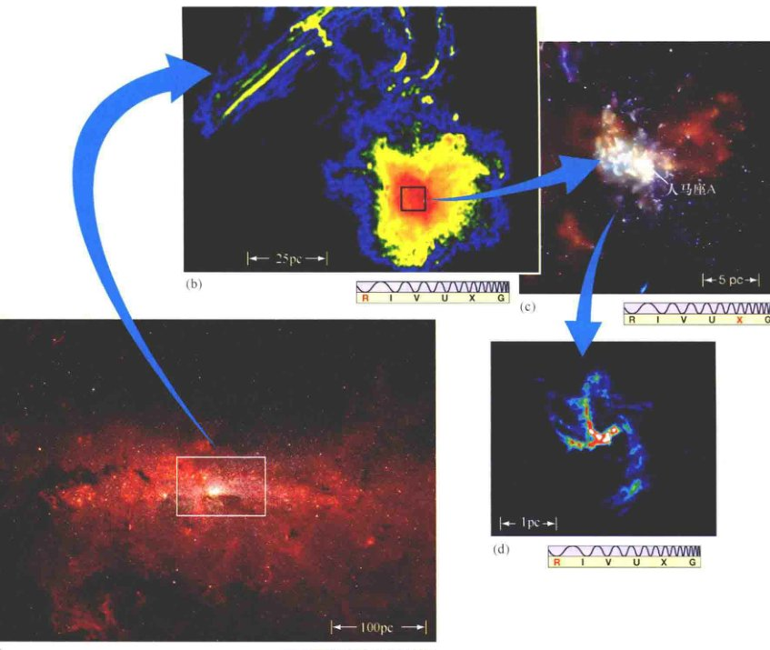
<div class="caption">
<strong>图23.25 银河系中心的特写</strong><br/>
        (a) 银河系中心周围的红外图像（白色方框内）展示了在一个相对较小的空间中聚集的许多明亮恒星。在这一方框所示区域中的物质密度大约是太阳附近的100万倍。(b) 从光谱射电部分观测到的银河系的中心部分，展示了银心附近100pc的区域（右下的橙黄色团块中）。长波射电发射穿过银河系的尘埃，展现了银心近邻的物质图像。(c) 这幅钱德拉卫星的图像表明了，很可能是银河系中心黑洞的人马座A与一个热超新星遗迹（红色）的关系。(d) 人马座A的旋涡形态的射电发射表明存在一个只有几pc的旋转物质环。所有的图像都是伪彩色的，因为它们不在可见光谱范围内。[斯必泽空间望远镜 (SST)、美国国家射电天文台 (NRAO)、美国国家航空航天局 (NASA)]
    </div>
<p>高分辨率射电观测进一步揭示了较小尺度的结构。图23.25(b)显示了一个被称为<strong>人马座A</strong>的区域（这个名字仅仅意味着它是人马座中最亮的射电源）。它位于图23.24和图23.25(a)的中心区域，我们认为这就是银河系的中心。在大约25pc的尺度上可以看到延展的絮状结构。很多天文学家认为，这种结构的存在表明在中心附近存在强大的磁场，产生了与活跃的太阳上观测到的相似结构（不过大得多）。</p>
<p>在更小的尺度上[见图23.25(c)]，钱德拉卫星的观测表明存在一个延展的热X射线发射气体区域，这显然与一个超新星遗迹以及许多其他明亮的X射线源相关。在这个区域中存在一个只有几pc的旋转分子气体环或者盘，物质成旋涡状朝中心运动[图23.25(d)通过射电波段再次展示]。注意，这个盘的尺度与图23.24插入图中的致密中心团相当。</p>
<!-- Page 26 -->
<p>是什么引起了所有的这些活动？一个重要的线索来自于中心旋转气体旋涡的红外发射线的多普勒致宽。展宽的程度表明气体的运动速度非常快。为了保持这些气体位于轨道中，无论中心是什么物质，都必然具有极大质量——超过100万倍太阳质量。考虑到需要满足大质量与小尺度的要求，其中一个有力的竞争者就是一个超大质量黑洞。</p>
<p>当然，黑洞本身并不是能量的来源。相反，被黑洞巨大引力拉过来的巨大物质吸积盘在掉落过程中释放出能量，正如我们在《今日天文——恒星：从诞生到死亡》第11章中讨论中子星与恒星级黑洞的X射线发射时看到的一样，被认为是在物质旋转掉入过程中，吸积盘产生的强大磁场也可能起到了“粒子加速器”的作用，产生了极高能量的粒子，也就是在地球上探测到的宇宙线。20世纪90年代末，康普顿伽马射线天文台发现了高能粒子来源的间接证据，很可能是由视界附近的剧烈过程所产生的，它们从黑洞喷出并涌入距离银心1000pc以外的晕中。天文学家有理由怀疑类似事件也在许多其他星系中心发生。</p>
<h3>中心黑洞</h3>
<p>天文学家已经在银河系中心确认了一个超大质量黑洞的候选体。人马座的中心是一个名字发音很奇怪的不一般的天体，它叫作 <strong>Sgr A*</strong>（读作 “Saj A-star”）。根据第2章提到的活动星系的标准，这一致密的银河系核并非格外活跃。不过，过去20年进行的射电观测以及较近期的X射线以及伽马射线观测表明，它仍然是一个活动相当剧烈的区域。它的总能量输出（全波段）大约是 $10^{33}$ W，比太阳释放的能量高出一百多万倍。</p>
<p>利用位于从夏威夷到马萨诸塞州的射电望远镜进行的VLBI观测表明，Sgr A* 不会比10 AU大多少，而且它很有可能比这个数值还小。这个尺寸符合能量来源是一个大质量黑洞的观点。图23.26可能是至今为止最有力的支持黑洞观点的证据，它展示了银心最内层以 Sgr A* 为中心0.04pc（或8000 AU）的高分辨率红外图像。利用凯克望远镜和甚大阵先进的自适应光学技术，美国和欧洲的研究人员制作了这个区域具有史无前例衍射极限的（分辨率0.05"）图像。</p>
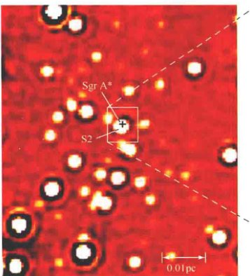
<div class="caption" style="clear: left;">
<strong>图23.26 银心附近的轨道</strong><br/>
        这幅极近距离的银心图（左）是通过红外自适应技术拍摄的，展示的是银心最内层0.1pc的极高分辨率图像。插入图中，S2标示的是1992年到2003年间最内部恒星的运动轨道。实线表示的是对S2的最佳拟合轨道，轨道以位于人马座A的400万倍太阳质量的黑洞（十字标识）为中心。[欧洲南方天文台 (ESO)]
    </div>
<p>令人惊叹的是，图像质量极高，以至于足以清楚地看到一些恒星的自行——围绕银心的轨道。插入图展示了其中最亮的一颗恒星——S2在10年周期里进行的一系列观测。其运动与一个围绕位于 Sgr A* 的大质量天体运动的轨道相符，也与牛顿运动定律一致。图中的实线展示了对于观测结果的最佳拟合，一个周期为15年、半长轴为950 AU的轨道，对应（基于牛顿修改的开普勒第三定律）的中心质量大约为400万倍太阳质量。这组恒星中的另一颗 (S16) 的运动非常清楚地表明了中心天体的小尺寸，这颗恒星的轨道极扁，使得它距离中心在45 AU以内。</p>
<p>其他使用自适应光学红外成像技术的观测也揭示了一个距离 Sgr A* 很近的亮源，其变化周期约为10 min。这个源可能是围绕传说中的黑洞旋转的吸积盘上的一个热点。值得注意的是，即使具有前文提到的大质量，如果 Sgr A* 确实是一个黑洞，其视界的大小也仍然只有0.02 AU。</p>
<!-- Page 27 -->
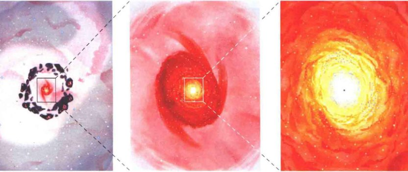
<div class="caption">
<strong>图23.27 银河系中心放大图</strong><br/>
        这一系列银河系中心艺术图的每一幅的分辨率都逐渐被提高10倍。图(a)展示的与图23.16相同。图(f)展示了银河系最内层0.5pc的一个巨大旋涡。图23.25中的数据与这些艺术想象并不完全相符，因为图23.25的角度平行于银盘——沿着从太阳到银心的视线方向；而这六幅图描绘的是垂直于银盘、并逐渐朝银盘放大的简化图像。[L. 蔡森 (L. Chaisson)]
    </div>
<p>目前，8kpc以外无法分辨如此小的区域，虽然射电天文学家希望能够通过改进VLBI技术在下一个十年内“看到”视界并研究外围的吸积盘。</p>
<p>图23.27用简化的视角展示了这些发现。每一幅图都以银河系核心为中心，每一幅的分辨率都比上一幅高10倍。图23.27(a)展示了银河系的全景。这幅图覆盖了大约50kpc的范围。图23.27(b)的间距为5kpc，几乎被银河系棒和最内层旋臂的巨大旋涡所充满。转换到500pc的空间，图23.27(c)描绘了前文提到的400pc气体环的一部分。暗斑代表巨大的分子晕，粉色团块表示与这些云团内部恒星形成相关的发射星云。在图23.27(b)和图23.27(c)中，艺术家去掉了明亮的核球，使我们能够更好地“看到”中心区域。</p>
<p>在图23.27(d)中50pc处，存在一个粉色（稀薄温暖）的电离气体区域围绕着红色（更致密、更温暖）的银心，大致对应图23.25(b)和图23.25(c)中的图像。产生这个巨大电离区域的能量来源于频繁的超新星和其他位于银心的剧烈活动现象：近期的多波段观测表明，这些剧烈活动将巨大（长达10kpc）的高能粒子磁化喷流沿着大致与银盘垂直的方向吹出银心。喷流携带的总能量比一颗普通超新星要高出100万倍。在图23.27(d)中也展示了大量年轻致密的星团，也是银心附近近期恒星形成爆发的证据。</p>
<p>图23.27(e)跨越5pc，展示了中心星团（为清晰起见，图中有所稀释），周围的恒星形成环，以及围绕着银心的倾斜旋转的热气体($10^4$ K)旋涡。图23.27(f)展示了这个巨大旋涡的最核心部分，图中一个快速旋转、温度高达数百万开尔文的白色炽热气体盘几乎吞没了中心黑洞（黑点所示）。同时还能看到两个可能是被瓦解的星团的残留恒星环。图23.26展示的黑洞本身以及周围环绕的恒星轨道太小了，无法在这个尺度上体现出来。</p>
<p>过去的十年中，我们对银河系最内层几秒差距的了解突飞猛进，天文学家也在努力破解隐藏在不可见辐射中的线索。不过，今天的我们只是刚刚开始意识到银河系最核心深处的、完全陌生区域的整体复杂性。</p>
<div class="check-understanding">
        什么最有可能解释在银心观测到的高能现象？
    </div>
<!-- Page 28: Review -->
<aside class="sidebar">
<h3>终极问题</h3>
<p>银河系有多大？我们对宇宙中这个庞大家园的尺寸、形状和质量了解多少？近年来，天文学家升级了这个恒星、气体与暗物质的系统。其总质量提高了将近10倍，外延尽可能到达距离最近邻星系一半的地方，其中的暗物质比普通物质要多至少5倍。即便如此，我们仍有可能严重地低估了这个巨大系统的尺度。</p>
</aside>
<section class="chapter-unit" style="background-color: #f9f9f9; padding: 20px; border-radius: 5px;">
<h2>章节回顾</h2>
<h3>小结</h3>
<ol>
<li><strong>星系</strong>(p.6) 是一个巨大的恒星和星际介质的集团，它孤立于宇宙中，由自身的引力束缚在一起。因为我们身处其中，<strong>银河系盘</strong>(p.6) 看起来就像是一道穿过天空的宽光束，一条被称作银河的光束。中心附近，银盘增厚成为<strong>核球</strong>(p.6)。银盘被一个充满年老恒星以及星团的近球状<strong>银晕</strong>(p.6) 所包围。就像其他许多在天空中看到的星系一样，银河系是一个<strong>旋涡星系</strong>(p.8)。盘星和晕星在空间分布、年龄、颜色以及轨道运动上都有区别。银河系可见部分的直径约为30kpc。在太阳附近，银盘的厚度约为300pc。</li>
<li>可以通过光度随时间变化的<strong>变星</strong>(p.9) 来研究银晕。<strong>脉动变星</strong>(p.9) 的亮度有周期性的变化。对天文学家特别重要的是<strong>天琴RR变星</strong>(p.9) 以及<strong>造父变星</strong>(p.9)。所有天琴RR变星的光度大致相同。对于造父变星而言，可以利用<strong>周光关系</strong>(p.10) 来确定其光度。已知光度，天文学家可以利用平方反比关系确定距离。最亮的造父变星可以看到数百万秒差距的距离，将宇宙距离天梯推广到银河系外遥远的地方。20世纪初，哈罗·沙普利利用天琴RR星确定了许多银河系球状星团的距离，并发现它们在空间上基本呈现球状分布，但是球的中心远离太阳。这些星团的分布中心距离8kpc以外的<strong>银心</strong>很近(p.13)。</li>
<li><strong>银盘</strong>上的恒星和气体沿着近圆轨道围绕银心运动。核球内的恒星沿着非常随机的三维轨道运动，反复穿过银盘却没有特定的朝向。</li>
<li><strong>银晕</strong>缺乏气体和尘埃，所以不能形成新的恒星。所有的晕星都是年老的。富气体的银盘是目前恒星形成发生的地方，并且包含许多年轻恒星。晕星早在银盘成型之前就出现了，而那时它们的运动轨道还没有特定的方向。在银盘形成之后，在盘内诞生的恒星承袭了它整体的旋转，因此在银盘内沿着圆形轨道运动。</li>
<li>射电观测清晰地揭示了<strong>银河系旋臂</strong>的形态(p.20)。旋臂是发生恒星形成的星际气体最为致密的区域。旋涡并不是“绑定”在银盘物质上，因为如果是那样的话，旋涡在很早以前就会因为银盘的较差自转而停止。相反，它们可能是在银盘上运动的<strong>旋涡密度波</strong>(p.20)，并且在所到之处触发恒星的形成。另一种可能是，旋涡可能是通过<strong>自传播恒星形成</strong>(p.22) 而产生的。在这个过程中，前一代恒星形成和演化产生的激波将会触发下一代恒星的形成。</li>
<li><strong>银河系自转曲线</strong>(p.24) 将银盘物质的旋转速度与距银心的距离相对应。利用牛顿运动定律，天文学家可以确定银河系的质量。他们发现，银河系质量在球状星团以及我们看到的旋涡结构之外仍然继续增长。银河系与许多其他星系一样，具有一个不可见的<strong>暗晕</strong>(p.24)，这个暗晕包含了比可见物质更多的质量。组成这些暗晕的<strong>暗物质</strong>(p.24) 成分未知，主要的候选体包括低质量恒星以及异常亚原子粒子。近年来探测恒星暗物质的尝试利用了引力透镜的原理，一颗暗弱的前景天体有时候会经过一颗更遥远的恒星，并偏折这颗恒星的光从而导致其视亮度的短时间增大。这种偏折效应被称为<strong>引力透镜效应</strong>(p.26)。</li>
<li>研究红外和射电波段的天文学家已经发现了银心几秒差距以内的高能活动。主导的解释是，在那里存在一个质量比太阳约大400万倍的黑洞。这个黑洞位于一个包含数以百万计恒星的致密星团中心，而这个星团被一个分子云构成的恒星形成盘所包围。人们认为，观测到的活动是由黑洞的吸积以及其周围星团的超新星爆发所驱动的。</li>
</ol>
</section>
<section class="exercises">
<h3>复习与讨论</h3>
<ol>
<li>POS 我们有什么证据能证明我们生活在一个盘星系里？</li>
<li>为什么从我们占据的有利位置——地球上很难看到银河系的全貌？</li>
<li>LO1 POS球状星团是如何帮助我们了解银河系以及我们在其中所处的位置呢？</li>
<li>造父变星是如何用于确定距离的？它们能测量多远的距离？</li>
<li>LO2 20世纪初，利用天琴RR变星取得了哪些重要的发现？</li>
<li>在研究银河系结构方面，射电天文学起到了哪些作用？</li>
<li>LO3 比较盘星和晕星的运动。</li>
<li>LO4 银晕中红色的恒星反映了银河系历史的哪些方面？</li>
<li>LO5 POS 为什么星系旋臂被认为是现在以及未来恒星形成的区域？</li>
<li>什么是自传播恒星形成？</li>
<li>LO6 银河系自转曲线为我们提供了哪些关于银河系总质量的信息？</li>
<li>POS 有哪些银河系存在暗物质的证据？描述一些银河系暗物质的候选体。</li>
<li>什么是引力透镜？天文学家可以用它来搜寻暗物质吗？</li>
<li>为什么光学天文学家不能很容易地研究银河系中心？</li>
<li>LO7 POS 为什么天文学家认为在银河系中心存在一个超大质量黑洞？</li>
</ol>
</section>
<section class="exercises">
<h3>概念自测：选择题</h3>
<ol>
<li>银河系中的大部分亮星都位于：(a) 中心；(b) 核球；(c) 晕；(d) 盘。</li>
<li>VIS 根据图23.7（“周光关系图”），一颗光度是1000倍太阳光度的造父变星的脉动周期大约是：(a) 1天；(b) 3天；(c) 10天；(d) 50天。</li>
<li>已发现的球状星团主要位于：(a) 银心；(b) 银盘；(c) 旋臂；(d) 银晕。</li>
<li>沙普利测量球状星团距离的方法包括：(a) 三角视差；(b) 比较变星的视星等与绝对星等；(c) 分光视差；(d) 雷达测距。</li>
<li>在银河系中，太阳位于：(a) 银心附近；(b) 银心以外一半的位置；(c) 外边缘；(d) 银晕中。</li>
<li>如果要获得最多的发现，搜寻新形成恒星的望远镜应该指向：(a) 反银心方向；(b) 垂直银盘方向；(c) 一条旋臂内；(d) 旋臂之间。</li>
<li>银河系中形成的第一代恒星：(a) 在银晕中随机运动；(b) 在银盘面内运动；(c) 在银心附近运动；(d) 随着银河系自转沿着相同方向运动。特别是在过去的几十年内，天文学研究有力地说明了我们居住在一颗看似平常的岩石上。</li>
<li>VIS 图23.21（“银河系的自转曲线”）表明：(a) 银河系做刚体转动；(b) 根据我们所看到的光，银河系在距离中心很远的地方旋转速度更慢；(c) 根据我们所看到的光，银河系在距离中心很远的地方旋转速度更快；(d) 在银心15kpc外不存在物质。</li>
<li>银河系内大部分质量的存在形式是：(a) 恒星；(b) 气体；(c) 尘埃；(d) 暗物质。</li>
<li>银河系中心存在黑洞的主要证据是：(a) 中心附近恒星消失了；(b) 中心附近看不到任何恒星；(c) 中心附近恒星绕着不可见天体运动；(d) 银河系的自转速度比天文学家想象得快。</li>
</ol>
</section>
<section class="exercises">
<h3>问答</h3>
<p style="font-size: 0.9em; color: #666;">问题序号后的圆点表示题目的大致难度。</p>
<ol>
<li>● 计算距离地球100pc的半径为100AU的原恒星云的角直径，并将它与仙女星系大约为6°的角直径[图23.2(a)]进行比较。</li>
<li>●● 上一题中的星云需要多近的距离才能具有与仙女座一样的角直径？如果它的光度是太阳的10倍，试计算其中心恒星的视星等。</li>
<li>●● 观测极限为20等的望远镜能看到最远的绝对星等为0等的天琴RR变星的距离是多少？</li>
<li>●● 典型造父变星比天琴RR变星亮100倍。作为距离测量工具，造父变星能比天琴RR变星测量的距离远多少？</li>
<li>●● 一个球状星团的横向速度（相对太阳）为200km/s，距离3kpc。试计算其自行（单位：每年每角秒）。你觉得这样的运动能够被测量到吗？</li>
<li>●● 假定距银心20kpc处的旋转速度为240km/s，试计算该半径以内的银河系总质量。</li>
<li>●● 如果物质需要花 (a) 1亿年 (b) 5亿年完成一次完整的轨道运动，试利用图23.21中提供的数据估计其到银心的距离。</li>
<li>●● 观测表明到银心的角距离为0.2"的物质的轨道速度为1200km/s。如果太阳到银心的距离是8kpc，而物质轨道为圆形并侧向我们，试计算轨道半径和物质绕转的天体的质量。</li>
</ol>

<h3>实践活动</h3>

<p><strong>协作项目</strong><br/>

构建你自己的梅西耶星表，列出110个梅西耶天体的名字、类型和坐标。画出所有天体的天体坐标-赤经和赤纬，类似于地球上的纬度和经度。用不同的颜色表示发射星云、疏散星团和星系。这些天体在天空中的分布有什么特点？这可能会帮助你找到银河系在图上的位置（更多的研究课题）。你认为星系为什么似乎都不在银道面上？</p>

<p><strong>个人项目</strong><br/>

观察仙女星系M31。这是肉眼能看到的最遥远的天体，但是不要期望看到如图1.2（a）中所示的图像！为了确定M31的位置，请找到北极星、仙后座以及仙女星座。将北极星与仙后座“W”中的第二个“V”用一条线连接起来，一直延伸到南天。在到达仙女座北部的恒星弧之前，这条线就会穿过M31。不借助任何辅助工具，在最黑暗的夜里，只能看到仙女星系的核心，就像是一颗有些模糊的恒星。利用双简望远镜或广角目镜可以看到这个星系和它的星系盘。切换至更高的放大倍数，就能看到星系核以及小的卫星星系-南边的M32和西北方的M110。</p>

</section>
</article>